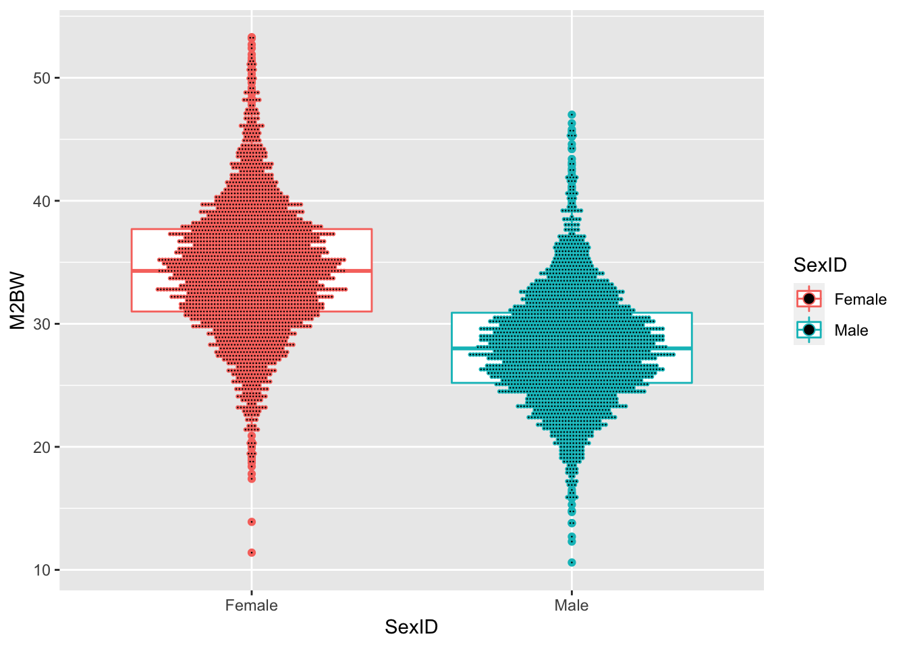

Chapter 19 Mixed Model
19.1 Introduction
19.1.2 Hierarchical and Marginal model
The general linear mixed model can be written as:
\[ \begin{array}{c} \mathbf{Y}_{i}=X_{i} \beta+Z_{i} \mathbf{b}_{i}+\epsilon_{i} \\ \mathbf{b}_{i} \sim N(\mathbf{0}, D) \quad \text { und } \quad \epsilon_{i} \sim N\left(0, \Sigma_{i}\right) \end{array} \] und \(\mathbf{b}_{1}, \ldots, \mathbf{b}_{N}, \epsilon_{1}, \ldots, \epsilon_{N}\) stoch. unabhängig sind Dies kann umgeschrieben werden als Hierarchical model \[ \mathbf{Y}_{i} \mid \mathbf{b}_{i}=N\left(X_{i} \beta+Z_{i} \mathbf{b}_{i}, \Sigma_{i}\right), \quad \mathbf{b}_{i} \sim N(\mathbf{0}, D) \] One often assumes that \(\Sigma_{i}\) only depends on the dimension of \(i\) i.e. that the unknown parameters in \(\Sigma_{i}\) are independent on \(i\) (仅取决于 \(i\) 的维数, 未知参数 \(\Sigma_{i}\) 独立于 \(i\) )
Marginal model
The following marginal model follows from the hierarchical model: \[\mathbf{Y}_{i} \sim N\left(X_{i} \beta, Z_{i} D Z_{i}^{T}+\Sigma_{i}\right)\] The hierarchical model implies the marginal model, the reverse is not generally true: \(\quad V_{i}=Z_{i} D Z_{i}^{T}+\Sigma_{i}\)
19.1.3 MLE in Marginal model
\[ \mathbf{Y}=\left(\begin{array}{c} \mathbf{Y}_{1} \\ \vdots \\ \mathbf{Y}_{N} \end{array}\right), \quad \mathbf{V}=\operatorname{diag}\left(V_{1}, \ldots, V_{N}\right), \quad \mathbf{X}=\left(\begin{array}{c} X_{1} \\ \vdots \\ X_{N} \end{array}\right) \] 假设 \(\alpha\) 是 \(q(q+1) / 2\) 的不同元素的矢量, 分别是 \(D\) 和 \(\Sigma_{i}\) 中的所有元素然后矩阵 \(\mathbf{V}\) 取决于 \(\alpha\), 因此我 们将 \(\mathbf{V}(\alpha)\) -这允许将边际模型写为 \[ \mathbf{Y} \sim N(\mathbf{X} \beta, \mathbf{V}(\alpha)) \] The Log-Likelihood-Kern is \[I(\beta, \alpha)=-\frac{1}{2}\left\{|\mathbf{V}(\alpha)|+(\mathbf{Y}-\mathbf{X} \beta)^{T} \mathbf{V}(\alpha)^{-1}(\mathbf{Y}-\mathbf{X} \beta)\right\}\] 给定 \(\alpha\) (因为它是一个一般的线性模型)，因此将 \(\beta\) 的ML估计量作为Aitken估计量给出: \[ \hat{\beta}(\alpha)=\left(\mathbf{X}^{T} \mathbf{V}(\alpha)^{-1} \mathbf{X}\right)^{-1} \mathbf{X}^{T} \mathbf{V}(\alpha)^{-1} \mathbf{Y} \] 通过将 \(\hat{\alpha}\) 的公式插入对数似然内核并最大化 \(\hat{\beta}\) 中的结果函数，可以确定 \(\alpha\) (Nullstelle des Scores例如通过 费舍尔评分) Der MLE für \(\beta\) ergibt sich dann durch einsetzen von \(\hat{\alpha}\) in obige Formel \((\hat{\beta}(\hat{\alpha}))\)
Problem of MLE
最大似然估计在估计混合效应模型里的固定效应和随机效应（方差成分）时，采用迭代交互估计固定效应和方差的方法。估计方差时需要有个参考点，这个参考点就是固定效应，比如均值。 所以MLE先估计固定效应，然后估计方差成分。采用EM或IGLS迭代法去估计。先估计固定效应，此时假定对任何观测的方差或随机效应缺失。然后基于固定效应再去估计方差，依次迭代，直到估计值不再变化为止。
估计固定效应，这就意味着在估计方差时把固定效应视为已知并且固定，此时会出现两个问题
- 第一固定效应的变异没有考虑
- 第二估计固定效应时消耗的自由度没有考虑
大样本时，这两个问题都不是问题，小样本时这两个问题对估计方差有比较大的影响。 均值的总体方差计算时采用“各个X值减去总体均值的平方和”作分子，分母用N；样本方差计算时采用“各个X值减去样本均值的平方和”作分子，分母用N-1（因为均值是估计出来的，所以此时需要惩罚）；而ML估计就类似于总体方差的估计，但是实际中却用了样本均值，分子却用了N，没有用N-1。大样本时估计值相差无几，小样本时相差很大。这会导致估计出来的方差偏小，导致固定效应的标准误偏小，从而导致一类错误膨胀。
19.1.4 REML in Marginal model
REML类似于“N-1”版本的MLE，把方差进行了校正。REML把估计固定效应和方差的过程分开， 在小样本时可以更准确的估计方差，由此得到更准确的固定效应的标准误，从而控制一类错误膨胀。
REML的第一步是忽略层次结构，先通过 ordinary least squares (OLS) 得到残差. OLS残差和原始结果具有同样的条件方差（基于X变量）。用OLS残差估计方差时固定效应被限制为0， 所以REML估计方差成分时无需考虑考虑固定效应。
第二步是估计固定效应。采用GLS通过matrix multiplication的方法估计固定效应， 即把REML估计出的方差成分放入Generalized least squares (广义最小二乘法)中去估计固定效应
PROC MIXED和PROC GLIMMIX都提供模型效果的最大似然估计（缩写MLE）以及方差分量的REML估计。 REML代表残差（或受限）最大可能性（Patterson和Thompson 1971）。基于似然的方法的基本优势是它的适应性。对于随机块模型，方差分析和基于似然方法的结果相同， 但是对于大多数情况，方差分析不能应用于比随机块稍复杂的情况，而基于似然的方法可以应用于任意复杂的情况。 REML默认方差估计方法。可以通过在PROC MIXED中使用METHOD = ML或在PROC GLIMMIX中使用METHOD = MSPL来获得ML方差估计。ML方差估计所得的方差估计将小于相应的REML估计，并且所得的置信区间将更窄， 而检验统计量将更大。这反映了众所周知的事实，即方差成分的ML估计值向下偏。
For example, in the one-sample case, when \(y_{1}, y_{2}, \ldots, y_{n}\) is a random sample from \(\mathrm{N}\left(\mu, \sigma^{2}\right)\), the ML estimate of the variance is as follows: \[ \sum_{i}\left(y_{i}-\bar{y}\right)^{2} / n \] whereas the sample variance - which is the simplest REML variance estimate-is as follows: \[ \sum_{i}\left(y_{i}-\bar{y}\right)^{2} /(n-1) \] 后者是无偏见的，通常被视为首选方差估计。可以很容易地看出，使用ML方差估计会导致1型错误率上升 (对于标称 \(a=0.05\), 拒绝率高达25%)， 并且置信区间覆盖率不足。
proc mixed data=bond method=reml;
class ingot metal;
model pres=metal;
random ingot;
run;
proc glimmix data=bond method=rspl;
class ingot metal;
model pres=metal;
random ingot;
run;19.1.5 Variance correction
19.1.5.1 Kackar-Harville correction
在小样本情况下，固定效应的方差成分 (可以理解为标准误) 估计是不准确的，无论是MLE还是REML。更 进一步说，在计算固定效应的p-value时，需要用到的fisher information和中心极限定理 (asympotics) 在 小样本下会失效, 导致方差估计偏低, 从而导致一类错误膨胀。有学者指出用Bayesian方法可以解决这个 问题 (贝叶斯方法不依赖于asympotics)，但是Kackar-Harville以及后来的Kendward-roger通过校正方羞 的方式在频率学派内部得到解决。
Kackar-Harville发现了如下公式, 固定效应的方差等于固定效应样本估计值的REML方差估计值加上小样本 偏差。 \[ \operatorname{Var}(\gamma)=\operatorname{Var}^{R E M L}(\hat{\gamma})+\text { Small Sample Bias } \] 从KH到KR的一系列研究都是针对如何估计small sample bias的。KH发现, Small sample bias (SSB) 的 估计需要用到方差成分的总体值 (而非样本估计值) ; 接着他们采用了Taylor series expansion方法用方差 和协方差成分的样本估计值去渐进估计了SSB; 之后Prasad-Rao, Harville-Jeske在KH的基础上，进一步扩 展和发展了该方法。所以这个校正有时也被称为Prasad-Rao-Jeske-kackar-Harville correction.
19.1.5.2 Kendward-Roger correction
KR进一步发现“固定效应样本估计值的REML方差估计值”在小样本下也有问题, 也就是REML在估计固定效 应时直接用估计出的方差放入GLS估计方程去估计固定效应，此时并没有考虑方差成分本身的变异, 而是直 接把其视为已知并且固定。KR进一步用泰勒公式展开去估计“固定效应样本估计值的REML方差估计值,” 此 时考虑了在估计固定效应时的方差成分是估计值并且不是已知的这个事实。小样本情况下, 采用t检验而非 Z检验 (多元情况对应的是卡方检验而非F检验)。
- K第一步相当于是针对“t=固定效应/残差”中的残差给出了准确的估计
- 第二步是计算准确的自由度。在混合效应模型中，自由度的计算公式往往不存在，此时难以估计出准 确的自由度。KR采用了矩估计匹配方法 (method of moments matching procedure)，此时的估计更 加准确, 有时候甚至会出现分数形式的自由度。
19.1.6 Hypothesis tests
Tests of fixed effects are typically done with either Wald or likelihood ratio (LRT) tests. With the assumptions of asymptotic distributions and independent predictors, Wald and LRT tests are equivalent. When a data set size is not large enough to be a good approximation of the asymptotic distribution or there is some correlation amongst the predictors, the Wald and LRT test results can vary considerably.
- Wald test. Tests of the effect size which is scaled using the estimated standard error.
- LRT (Likelihood Ratio Test.) Tests the difference in two nested models using the Chi square distribution.
The Wald test is based only on estimates from the model being evaluated. This results in an implied assumption that a model which holds the parameter being tested to zero will be the same with the exception of the parameter which is being tested. Correlation between the tested predictor and the other model predictors, can cause the estimate made from the model including the parameter to be different from a model which holds the parameter to zero. The LRT requires the formal estimation of a model which restricts the parameter to zero and therefore accounts for correlation in its test.
Wald检验仅基于从模型估计值进行评估。这导致隐含的假设，即将要测试的参数保持为零的模型将是相同的，除了要测试的参数之外。测试的预测变量与其他模型预测变量之间的相关性可能导致从包含参数的模型进行的估计不同于将参数保持为零的模型。 LRT需要对模型进行形式上的估计，该模型将参数限制为零，因此考虑了其测试中的相关性。
19.1.6.1 Wald Test
关于固定效应的假设是最重要的。在最简单的情况下，测试相应的第j个效应的显着性。假设 近似正态 分布, 可以在 \(\beta\) j的 (近似 \()\) 置信区间的帮助下进行测试。如果dj处于此置信区间之外, 则对于给定的显着 性水平a拒绝H0。 \[ \begin{array}{c} H_{0}: \beta_{j}=d_{j} \text { gegen } H_{1}: \beta_{j} \neq d_{j} \\ t_{j}=\frac{\hat{\beta}_{j}-d_{j}}{\hat{\sigma}_{j}} \end{array} \] 其中 \(\hat{\sigma}_{j}\) 是 \(\hat{\boldsymbol{\beta}}\) 的近似协方差矩阵的 \(j\) -th个对角元素的根。即使假设 \(\gamma\) 和 \(\varepsilon\) 的正态分布，通常希望 \(t_{j}\) 对 于大样本近似为标准正态, 并在 \(\left|t_{j}\right|>z_{1-\alpha / 2}\) 的情况下拒绝 \(\$ H_{-}\{0\} \$\) $ 更一般形式的线性假设 \[ H_{0}: \boldsymbol{C} \boldsymbol{\beta}=\boldsymbol{d} \text { gegen } H_{1}: \boldsymbol{C} \boldsymbol{\beta} \neq \boldsymbol{d} \] \[ W=(\boldsymbol{C} \hat{\boldsymbol{\beta}}-\boldsymbol{d})^{\prime}\left(\boldsymbol{C}^{\prime} \boldsymbol{A}_{11} \boldsymbol{C}\right)^{-1}(\boldsymbol{C} \hat{\boldsymbol{\beta}}-\boldsymbol{d}) \] The approximate covariance matrices are given by \[\widehat{\operatorname{Cov}}(\hat{\boldsymbol{\beta}})=\boldsymbol{A}_{11}=\left\{\sum_{i=1}^{m} \boldsymbol{X}_{i}^{\prime} \hat{\boldsymbol{V}}_{i}^{-1} \boldsymbol{X}_{i}\right\}^{-1}\]
19.1.6.2 Likelihood Ratio Test
The Likelihood Ratio Test (LRT) of fixed effects requires the models be fit with by MLE (use REML=FALSE for linear mixed models.) The LRT of mixed models is only approximately χ2 distributed. For tests of fixed effects the p-values will be smaller. Thus if a p-value is greater than the cutoff value, you can be confident that a more accurate test would also retain the null hypothesis. For p-values that are only a little below the cutoff value, a more accurate approach would need to be used.
19.1.7 Residual Structure
标准线性回归模型的最简单设置中，我们具有恒定的方差而没有协方差。 \[ \Sigma = \left[ \begin{array}{ccc} \sigma^2 & 0 & 0 \\ 0 & \sigma^2 & 0 \\ 0 & 0 & \sigma^2 \\ \end{array}\right] \]

Figure 19.1: Figure: Residual Structure in the mixed model
每个块代表与个体内观察有关的协方差矩阵。在人内，对角线上有方差，非对角线上有协方差。当考虑整个数据时，我们可以看到一个人的观察与另一个人没有协方差（灰色）。此外，人内的协方差是恒定值，方差也是恒定值。
此模型中有两个方差来源，即剩余观察水平方差和与人有关的方差。结合起来，它们提供了我们尚未使用协变量捕获的总残差。在这种情况下，大约是我们对角线显示的值0.12。非对角线是归因于学生的方差，我们将其交替解释为类内相关性（除以总方差会将其转换为相关性度量）。
| group | effect | variance | sd | var_prop |
|---|---|---|---|---|
| student | Intercept | 0.064 | 0.252 | 0.523 |
| Residual | Content | 0.058 | 0.241 | 0.477 |
放宽等方差的假设，并分别进行估计。例如，在这种异质方差的情况下，我们可能会看到随时间变化的或多或少的变化。(relax the assumption of equal variances, and estimate each separately.)
\[ \Sigma = \left[ \begin{array}{ccc} \sigma_1^2 & 0 & 0 \\ 0 & \sigma_2^2 & 0 \\ 0 & 0 & \sigma_3^2 \\ \end{array}\right] \]
更一般地，参考先前的估计方差符号，我们可以看到协方差矩阵（针对群集）如下。(covariance structure of compound symmetry 复合对称的协方差结构)
\[ \Sigma = \left[ \begin{array}{ccc} \color{orange}{\sigma^2 + \tau^2} & \tau^2 & \tau^2 & \tau^2 & \tau^2 & \tau^2 \\ \tau^2 & \color{orange}{\sigma^2 + \tau^2} & \tau^2 & \tau^2 & \tau^2 & \tau^2 \\ \tau^2 & \tau^2 & \color{orange}{\sigma^2 + \tau^2} & \tau^2 & \tau^2 & \tau^2 \\ \tau^2 & \tau^2 & \tau^2 & \color{orange}{\sigma^2 + \tau^2} & \tau^2 & \tau^2\\ \tau^2 & \tau^2 & \tau^2 & \tau^2 & \color{orange}{\sigma^2 + \tau^2} & \tau^2 \\ \tau^2 & \tau^2 & \tau^2 & \tau^2 & \tau^2 & \color{orange}{\sigma^2 + \tau^2} \\ \end{array}\right] \]
假设我们实际上是想了解基本的协方差/相关性。切换到相关性表示法，仍然可以将方差视为常数或单独估算。 ρ 表示观察值之间的残差相关性。估计所有时间点对的相关性都不同（具有恒定的方差）。 通常将其描述为非结构化或简单的“对称”相关结构。 \[ \Sigma = \sigma^2 \left[ \begin{array}{ccc} 1 & \rho_1 & \rho_2 \\ \rho_1 & 1 & \rho_3 \\ \rho_2 & \rho_3 & 1 \\ \end{array}\right] \] 另一个非常常用的相关结构（用于基于时间的设置）是自相关结构，滞后阶数为1。 这意味着我们假设相隔一个时间点的残差与某个值相关 ρ ，相隔两个时间点的观察结果相关 ρ2 \[ \Sigma = \sigma^2 \left[ \begin{array}{cccc} 1 & \rho & \rho^2 & \rho^3 \\ \rho & 1 & \rho & \rho^2 \\ \rho^2 & \rho & 1 & \rho \\ \rho^3 & \rho^2 & \rho & 1 \\ \end{array}\right] \]
19.1.8 Converge problems
模型无法收敛，这时候需要简化模型，使其收敛：针对模型无法收敛的问题，首先我们最终选取的模型要符合两个标准：1.可以收敛；2.不能过度拟合。(增大模型的迭代次数：无论增大迭代次数后，全模型是否可以收敛，都查看其随机效应. 相关接近1或-1，表明模型过度拟合，应该精简模型的随机斜率。)
会出现介于0.9到1之间的Corr，0.9以上的可以认定为过度拟合；
- 先删除最高阶的交互作用，因为只要有最高阶的交互作用，删除其他作用对模型没有影响(Barr D. J., 2013)；
- 删除交互作用后，如果仍不能收敛，请继续删除，这时如果两个主效应的Corr都大于0.9，请先删除Corr较大的那个； 3- 删除较大的主效应后如果仍然不能收敛，保留较大Corr的主效应，删除Corr较小的主效应（如果两个主效应的Corr都大于0.9，不能直接删掉它们，因为随机斜率彼此相互影响，删掉一个，其他的Corr都会相应改变），以此类推，直至探索到符合上面两条标准的模型。
- 进行随机斜率筛选的时候，请保持最大迭代次数和全模型相同，这样方便比较模型的差异。
19.1.9 Preface of linear mixed model
shrimp <- read.csv("./01_Datasets/shrimp.csv",sep=",", header=TRUE)
## AnimalID-个体编号
## SireID-父本编号
## DamID-母本编号
## FamilyID-家系编号
## SexID-性别
## TankID-测试池号
## M1BW-入池前体重
## M2BW-收获体重和M2Age
## 收获时日龄均为数字变量
library(ggplot2)
ggplot(data=shrimp,aes(x=SexID,y=M2BW,color=SexID))+
geom_boxplot()+
geom_dotplot(binaxis = "y",stackdir = "center",position = "dodge",binwidth = 0.25)
## 实际计算雌雄虾体重均值，发现雌虾的确比雄虾重。
## Howevwe 雌雄虾的这个差别是真实的吗？
## 雌雄虾分布在2多个测试池中，且来自105个家系，并且每个家系的入池体重是存在差别的。而且两个池子的养殖管理水平存在较大差别 TankID
## 我们需要去除测试池、家系对雌雄虾体重的影响，准确估计雌雄虾体重。接下来就要用到线性模型
## Choose the model 模型中一个效应到底是作为固定效应，还是随机效应
## "SAS for Mixed models (Second edition)": An effect is called fixed if the levels in the study represent all possible levels of the factor, or at least all levels about which inference is to be made
## Factor effects are random if they are used in the study to represent only a sample (ideally, a random sample) of a larger set of potential levels”
## 固定效应，该效应的所有水平在实验群体中都已经出现
## 随机效应, 试验群体出现的该效应的水平只是一个很大水平数中的随机抽样
## 如果我们分析一个效应的目的是为了研究它所在的一个具有概率分布的大群体的情况，那么这个效应应该作为随机效应。随机效应有两个特点，a) 它是大群体中的一个样本，b) 它具有概率分布。
shrimp.lm <- lm(M2BW~SexID,shrimp)
summary(shrimp.lm) ##
## Call:
## lm(formula = M2BW ~ SexID, data = shrimp)
##
## Residuals:
## Min 1Q Median 3Q Max
## -22.9765 -3.1765 -0.0765 3.0235 18.9235
##
## Coefficients:
## Estimate Std. Error t value Pr(>|t|)
## (Intercept) 34.3765 0.1082 317.65 <2e-16 ***
## SexIDMale -6.2137 0.1560 -39.82 <2e-16 ***
## ---
## Signif. codes: 0 '***' 0.001 '**' 0.01 '*' 0.05 '.' 0.1 ' ' 1
##
## Residual standard error: 5.101 on 4280 degrees of freedom
## Multiple R-squared: 0.2704, Adjusted R-squared: 0.2702
## F-statistic: 1586 on 1 and 4280 DF, p-value: < 2.2e-16library(dplyr)
shrimp %>%
group_by(SexID) %>%
transmute(sex.mean=mean(M2BW)) %>% unique()## # A tibble: 2 x 2
## # Groups: SexID [2]
## SexID sex.mean
## <chr> <dbl>
## 1 Male 28.2
## 2 Female 34.4ggplot(data=shrimp,aes(x=SexID,y=M2BW,color=SexID))+
geom_dotplot(binaxis = "y",stackdir = "center",position = "dodge",binwidth = 0.25)+
geom_vline(xintercept = 1)+
geom_vline(xintercept = 2)+
geom_hline(yintercept = 34.37646)+
geom_hline(yintercept = 28.16273)+
geom_abline(intercept = 34.3765+6.2137, slope=-6.2137)+
geom_text(x=2.4,y=31.5,label="-6.6155")+
annotate("segment",x=2.5,xend=2.5,y=28.16273,yend = 34.37646)
## 考虑家系结构，Pop:Family为随机效应，Pop、Sex和Tank为固定效应，Sex:M1BW为协变量
library(lme4)
shrimp.lm.9 <- lmer(M2BW ~ 1 + PopID + SexID + TankID + SexID:M1BW
+ (1|PopID:FamilyID),shrimp)
summary(shrimp.lm.9)## Linear mixed model fit by REML ['lmerMod']
## Formula: M2BW ~ 1 + PopID + SexID + TankID + SexID:M1BW + (1 | PopID:FamilyID)
## Data: shrimp
##
## REML criterion at convergence: 23070.4
##
## Scaled residuals:
## Min 1Q Median 3Q Max
## -5.5304 -0.5854 0.0240 0.6388 3.8977
##
## Random effects:
## Groups Name Variance Std.Dev.
## PopID:FamilyID (Intercept) 5.933 2.436
## Residual 12.527 3.539
## Number of obs: 4241, groups: PopID:FamilyID, 105
##
## Fixed effects:
## Estimate Std. Error t value
## (Intercept) 35.7188 1.0605 33.683
## PopIDPop2 -1.6596 0.6884 -2.411
## PopIDPop3 -3.7742 0.6733 -5.606
## PopIDPop4 -5.8638 0.7359 -7.968
## SexIDMale -5.6599 0.5901 -9.591
## TankIDT2 -2.9491 0.1097 -26.884
## SexIDFemale:M1BW 0.3757 0.1204 3.122
## SexIDMale:M1BW 0.2904 0.1231 2.360
##
## Correlation of Fixed Effects:
## (Intr) PpIDP2 PpIDP3 PpIDP4 SxIDMl TnIDT2 SIDF:M
## PopIDPop2 -0.384
## PopIDPop3 -0.419 0.506
## PopIDPop4 -0.519 0.476 0.494
## SexIDMale -0.248 0.002 0.007 -0.004
## TankIDT2 -0.042 -0.006 -0.004 -0.001 -0.030
## SxIDFm:M1BW -0.889 0.077 0.108 0.250 0.291 -0.010
## SxIDMl:M1BW -0.711 0.074 0.100 0.246 -0.352 0.010 0.786anova(shrimp.lm.9)## Analysis of Variance Table
## npar Sum Sq Mean Sq F value
## PopID 3 1233 411 32.8225
## SexID 1 40283 40283 3215.7223
## TankID 1 9038 9038 721.5100
## SexID:M1BW 2 122 61 4.8839## Compare with linear model
shrimp.lm.8 <- lm(M2BW ~ 1 + PopID + SexID + TankID + SexID:M1BW,shrimp)
## Mixed model Residual Variance 12.527
## 考虑家系结构后，残差方差明显变小，从残差中分离出了大部分的家系方差。
## 如果不考虑家系结构，残差方差明显被高估,估计值
mean(resid(shrimp.lm.8)^2) ## [1] 18.4211719.2 Random Slope and Intercept Model
This structure assumes that the errors are independent, and thus is termed an independent structure.
\[ \Sigma = \left[ \begin{array}{ccc} \sigma_1^2 & 0 & 0 \\ 0 & \sigma_2^2 & 0 \\ 0 & 0 & \sigma_3^2 \\ \end{array}\right] \]
19.2.1 Model Introduction
Suppose data are collected longitudinally at times \(t_{1}, \ldots, t_{p} .\) For each individual \(i, i=1, \ldots, n\), at time \(t_{j}, j=1, \ldots, p\), the observations are \(x_{1 i j}, \ldots, x_{k i j}, y_{i j}\) The random slope and intercept model is defined as \[ y_{i j}=\beta_{0}+\beta_{1} x_{1 i j}+\cdots+\beta_{k} x_{k i j}+\beta_{k+1} t_{j}+u_{1 i}+u_{2 i} t_{j}+\varepsilon_{i j} \] where
- \(u_{1 i}\) ’s are independent \(\mathcal{N}\left(0, \sigma_{u_{1}}^{2}\right)\) random intercepts,
- \(u_{2 i}\) ’s are independent \(\mathcal{N}\left(0, \sigma_{u_{2}}^{2}\right)\) random slopes,
- and \(\varepsilon_{i j}\) ’s are independent \(\mathcal{N}\left(0, \sigma^{2}\right)\) errors that are also independent of \(u_{1 i}\) ’s and \(u_{2 i}\) ’s
It is assumed that \(\operatorname{Cov}\left(u_{1 i}, u_{2 i}\right)=\sigma_{u_{1} u_{2}}\), and \(\operatorname{Cov}\left(u_{1 i}, u_{2 i^{\prime}}\right)=0\) for \(i \neq i^{\prime}\) 预测变量 \(x_{1}, \ldots, x_{k}\) 具有固定影响, 而随机截距 \(u_{1}\) 和斜率 \(u_{2}\) 具有随机影响。同样值得注意的是, 预测 变量 \(x 1, \ldots, x k\) 可能会随时间变化。 \(\operatorname{Cov}\left(y_{i j}, y_{i^{\prime} j^{\prime}}\right)=0, i \neq i^{\prime}\), 意味着在任何时间点, 针对不同个人的响应都是不相关的。还可以表明, 同一个人在不同时间点之间的响应可能是相关的, 因为 \(\operatorname{Cov}\left(y_{i j}, y_{i j^{\prime}}\right)=\sigma_{u_{1}}^{2}+\sigma_{u_{1} u_{2}}\left(t_{j}+t_{j^{\prime}}\right)+\sigma_{u_{2}}^{2} t_{j} t_{j^{\prime}}\) for \(j \neq j^{\prime}\). 此外, 可以验证响应变量 \(y_{i j}\) 与均值呈正态分布 \(y_{i j}\) \[\mathbb{E}(y)=\beta_{0}+\beta_{1} x_{1}+\cdots+\beta_{k} x_{k}+\beta_{k+1} t\] \[\operatorname{Var}\left(y_{i j}\right)=\sigma_{u_{1}}^{2}+2 \sigma_{u_{1} u_{2}} t_{j}+\sigma_{u_{2}}^{2} t_{j}^{2}+\sigma^{2}\]
19.2.2 SAS Implementation
## short-and-wide form to the long-form data set
data cholesterol;
input id gender$ age LDL0 LDL6 LDL9 LDL24 @@;
cards;
1 M 50 73 71 80 85 2 F 72 174 164 139 112
3 M 46 85 86 82 90 4 F 71 172 150 139 127
5 F 75 186 177 153 145 6 F 68 184 169 153 138
7 F 63 196 188 163 155 8 M 73 137 137 132 104
9 M 59 135 120 106 106 10 M 60 111 110 100 76
11 F 59 127 126 106 99 12 M 46 88 87 84 80
13 F 67 176 150 156 153 14 F 52 155 135 128 120
15 M 65 142 117 114 97 16 F 75 158 143 145 135
17 F 57 148 131 138 102 18 M 58 125 111 118 124
19 M 48 76 65 94 98 20 M 47 116 108 94 107
21 F 53 191 185 162 113 22 F 73 167 165 162 140
23 M 62 109 104 93 94 24 F 77 167 164 155 155
25 M 55 103 94 75 78 26 F 74 122 126 105 111
27 F 79 203 204 178 145
;
data longform;
set cholesterol;
array m[4] (0 6 9 24);
array c[4] LDL0 LDL6 LDL9 LDL24;
do i=1 to 4;
month=m[i];
LDL=c[i];
output;
end;
keep id gender age month LDL;
run;
## construct a histogram with fitted bell-shaped curve and
conduct normality testing
proc univariate data=longform;
var LDL;
histogram LDL/normal;
run;
## fit a random slope and intercept model
proc mixed data=covtest:
class gender;
model LDL=gender age month/solution;
random intercept month/subject=id type=un;
run;
Covariance Parameter Estimates
Cov Parm Estimate Pr Z
UN(1,1) 520.17 0.0013
UN(2,1) -16.3953 0.0087
UN(2,2) 0.7846 0.0028
Residual 69.8556 <.0001- The outpm= produces prediction of the response \(y\) for each row in the data set. If a new prediction is desired, the case must be added to the data set.
- Specification of type=un, an unstructured type of variance-covariance matrix, requests an estimate of the covariance \(\sigma_{u_{1} u_{2}}\).
- In the output, the estimators of \(\sigma_{u_{1}}^{2}, \sigma_{u_{1} u_{2}}, \sigma_{u_{2}}^{2}\), and \(\sigma^{2}\) are termed UN \((1,1)\), UN \((2,1)\), UN \((2,2)\) and Residual, respectively.
19.2.3 R Implementation
19.2.3.1 Model with one random intercept effekct
library("lme4")
library("lmerTest")
library("dplyr")
load("./01_Datasets/gpa.RData")
## Standard regression
gpa_lm = lm(gpa ~ occasion, data = gpa)
summary(gpa_lm)##
## Call:
## lm(formula = gpa ~ occasion, data = gpa)
##
## Residuals:
## Min 1Q Median 3Q Max
## -0.90553 -0.22447 -0.01184 0.26921 1.19447
##
## Coefficients:
## Estimate Std. Error t value Pr(>|t|)
## (Intercept) 2.599214 0.017846 145.65 <2e-16 ***
## occasion 0.106314 0.005894 18.04 <2e-16 ***
## ---
## Signif. codes: 0 '***' 0.001 '**' 0.01 '*' 0.05 '.' 0.1 ' ' 1
##
## Residual standard error: 0.3487 on 1198 degrees of freedom
## Multiple R-squared: 0.2136, Adjusted R-squared: 0.2129
## F-statistic: 325.3 on 1 and 1198 DF, p-value: < 2.2e-16## Run a mixed model, taking into account the specific effects of the students
## (1 | student) means that the intercept allowed to be expressed by 1 varies from student to student
gpa_mixed = lmer(gpa ~ occasion + (1 | student), data = gpa)
summary(gpa_mixed)## Linear mixed model fit by REML. t-tests use Satterthwaite's method [
## lmerModLmerTest]
## Formula: gpa ~ occasion + (1 | student)
## Data: gpa
##
## REML criterion at convergence: 408.9
##
## Scaled residuals:
## Min 1Q Median 3Q Max
## -3.6169 -0.6373 -0.0004 0.6361 2.8310
##
## Random effects:
## Groups Name Variance Std.Dev.
## student (Intercept) 0.06372 0.2524
## Residual 0.05809 0.2410
## Number of obs: 1200, groups: student, 200
##
## Fixed effects:
## Estimate Std. Error df t value Pr(>|t|)
## (Intercept) 2.599e+00 2.170e-02 3.223e+02 119.8 <2e-16 ***
## occasion 1.063e-01 4.074e-03 9.990e+02 26.1 <2e-16 ***
## ---
## Signif. codes: 0 '***' 0.001 '**' 0.01 '*' 0.05 '.' 0.1 ' ' 1
##
## Correlation of Fixed Effects:
## (Intr)
## occasion -0.469## Another way to interpret the variance output is to record the student variance as a percentage of the total variance, which is 0.064 / 0.122 = 52%.
## This is also called intra-class correlation because it is also an estimate of intra-cluster correlation
## Profile confidence intervals
confint(gpa_mixed)## 2.5 % 97.5 %
## .sig01 0.22517423 0.2824604
## .sigma 0.23071113 0.2518510
## (Intercept) 2.55665145 2.6417771
## occasion 0.09832589 0.1143027## 随机效果和随机拦截（即拦截+随机效果）
ranef(gpa_mixed)$student %>% head(5)## (Intercept)
## 1 -0.07089492
## 2 -0.21557844
## 3 0.08825694
## 4 -0.18664174
## 5 0.03038354## 不允许场合发生变化，对所有学生而言，这是一个固定的影响
coef(gpa_mixed)$student %>% head(5)## (Intercept) occasion
## 1 2.528319 0.1063143
## 2 2.383636 0.1063143
## 3 2.687471 0.1063143
## 4 2.412573 0.1063143
## 5 2.629598 0.1063143## 这些影响非常感兴趣，并希望对它们产生某种不确定性
library(merTools)
predictInterval(gpa_mixed) # 用于各种模型预测，可能带有新数据## fit upr lwr
## 1 2.523699 2.851349 2.210454
## 2 2.620635 2.959299 2.300084
## 3 2.734352 3.071774 2.407293
## 4 2.852496 3.182221 2.514207
## 5 2.951929 3.278841 2.628088
## 6 3.071456 3.385284 2.755372
## 7 2.392466 2.723366 2.060397
## 8 2.484752 2.831057 2.163211
## 9 2.608336 2.935076 2.258055
## 10 2.702097 3.045563 2.370114
## 11 2.837568 3.151263 2.488525
## 12 2.908671 3.243610 2.584743
## 13 2.682208 3.033447 2.359542
## 14 2.794641 3.114690 2.467780
## 15 2.902980 3.225609 2.553409
## 16 3.013053 3.348420 2.653239
## 17 3.108815 3.453750 2.791343
## 18 3.229991 3.553736 2.882010
## 19 2.425595 2.747808 2.075919
## 20 2.519399 2.859383 2.200611
## 21 2.631023 2.947396 2.313967
## 22 2.741807 3.074374 2.403761
## 23 2.841548 3.160653 2.542218
## 24 2.946674 3.285038 2.612237
## 25 2.633515 2.980727 2.312519
## 26 2.741388 3.047978 2.412064
## 27 2.834158 3.171005 2.524232
## 28 2.968130 3.252958 2.658692
## 29 3.075897 3.407623 2.734799
## 30 3.171863 3.504477 2.822429
## 31 2.287596 2.597693 1.952247
## 32 2.393005 2.719187 2.071580
## 33 2.504352 2.836608 2.187089
## 34 2.614723 2.939100 2.269227
## 35 2.713979 3.029264 2.377418
## 36 2.844736 3.159501 2.500228
## 37 2.438848 2.756947 2.117015
## 38 2.573137 2.898383 2.238159
## 39 2.668655 2.989535 2.351771
## 40 2.795726 3.094396 2.458469
## 41 2.863716 3.198272 2.555742
## 42 2.989846 3.284162 2.659776
## 43 2.812781 3.148457 2.489520
## 44 2.922503 3.259288 2.592713
## 45 3.023682 3.350789 2.700387
## 46 3.127182 3.447450 2.807805
## 47 3.250048 3.565438 2.942504
## 48 3.352919 3.670243 3.006016
## 49 2.731310 3.046221 2.395286
## 50 2.804096 3.123594 2.448322
## 51 2.905182 3.265348 2.596605
## 52 3.019829 3.361706 2.695591
## 53 3.117328 3.447986 2.782158
## 54 3.236856 3.564457 2.913928
## 55 2.615732 2.953198 2.294356
## 56 2.726104 3.063665 2.384776
## 57 2.829419 3.164473 2.496693
## 58 2.936642 3.287138 2.593349
## 59 3.046969 3.382563 2.698460
## 60 3.151494 3.470787 2.816503
## 61 2.965508 3.303229 2.612404
## 62 3.067491 3.409553 2.728351
## 63 3.181406 3.501698 2.870562
## 64 3.291128 3.603394 2.955742
## 65 3.395756 3.704012 3.067095
## 66 3.473374 3.813710 3.145434
## 67 2.592664 2.924751 2.257920
## 68 2.703820 3.020017 2.376233
## 69 2.806570 3.152133 2.488012
## 70 2.903450 3.233425 2.586778
## 71 3.014055 3.342981 2.677260
## 72 3.113831 3.460241 2.786458
## 73 3.119234 3.443547 2.796328
## 74 3.216349 3.553402 2.899777
## 75 3.329239 3.674262 2.995059
## 76 3.425091 3.768938 3.084490
## 77 3.548717 3.879147 3.216015
## 78 3.650672 3.983626 3.341554
## 79 2.709581 3.051241 2.393097
## 80 2.809460 3.157562 2.500966
## 81 2.935155 3.247987 2.589219
## 82 3.033818 3.385753 2.717802
## 83 3.141906 3.480026 2.818798
## 84 3.267401 3.591550 2.918002
## 85 2.385461 2.725850 2.052331
## 86 2.507216 2.829706 2.142581
## 87 2.614473 2.924127 2.263597
## 88 2.722617 3.007979 2.374568
## 89 2.816325 3.150453 2.459343
## 90 2.900524 3.245133 2.598373
## 91 2.476753 2.787001 2.160564
## 92 2.573198 2.921200 2.232036
## 93 2.690242 3.004507 2.359307
## 94 2.802192 3.156704 2.468983
## 95 2.914853 3.223268 2.577624
## 96 2.998929 3.328688 2.658779
## 97 2.303819 2.654435 1.974092
## 98 2.415373 2.757672 2.088477
## 99 2.545292 2.863227 2.196782
## 100 2.644011 2.974791 2.316826
## 101 2.744131 3.064357 2.408358
## 102 2.877740 3.201326 2.529540
## 103 2.283915 2.616741 1.977452
## 104 2.407094 2.718375 2.076295
## 105 2.520222 2.836185 2.162120
## 106 2.592897 2.928237 2.284529
## 107 2.728584 3.055686 2.383033
## 108 2.819386 3.143871 2.496923
## 109 2.507700 2.835357 2.165051
## 110 2.577261 2.916200 2.242344
## 111 2.707754 3.040302 2.378453
## 112 2.813680 3.155102 2.499025
## 113 2.922816 3.246022 2.606571
## 114 3.035251 3.370860 2.708552
## 115 2.863086 3.169645 2.499991
## 116 2.951620 3.285159 2.610573
## 117 3.043774 3.370011 2.713546
## 118 3.149271 3.504502 2.816890
## 119 3.263705 3.592937 2.936930
## 120 3.379046 3.689426 3.012918
## 121 2.292180 2.623446 1.959064
## 122 2.397231 2.752410 2.072097
## 123 2.493096 2.846894 2.192640
## 124 2.615503 2.963266 2.280702
## 125 2.737461 3.042651 2.382679
## 126 2.817249 3.167941 2.485999
## 127 2.718579 3.050103 2.369714
## 128 2.812832 3.139229 2.496537
## 129 2.934359 3.240415 2.589645
## 130 3.026082 3.353633 2.688854
## 131 3.161040 3.493065 2.807170
## 132 3.248355 3.587644 2.931332
## 133 2.663891 3.010803 2.352488
## 134 2.777981 3.096783 2.453148
## 135 2.901283 3.239202 2.564012
## 136 2.997607 3.318432 2.660756
## 137 3.092232 3.433603 2.760211
## 138 3.195695 3.534042 2.871850
## 139 2.597210 2.919405 2.268999
## 140 2.689880 3.020175 2.357298
## 141 2.788571 3.132783 2.468095
## 142 2.928677 3.248612 2.591211
## 143 3.013684 3.343248 2.680343
## 144 3.118126 3.453671 2.793313
## 145 2.978556 3.328409 2.645173
## 146 3.081690 3.413660 2.772428
## 147 3.213062 3.538079 2.886807
## 148 3.314964 3.628378 2.986081
## 149 3.426708 3.760817 3.105331
## 150 3.517639 3.841173 3.178061
## 151 2.324269 2.624407 1.990138
## 152 2.429473 2.785291 2.099451
## 153 2.548123 2.867708 2.205555
## 154 2.650934 2.967814 2.317240
## 155 2.758344 3.079105 2.432552
## 156 2.868239 3.198090 2.519856
## 157 2.239500 2.583133 1.895633
## 158 2.325698 2.667353 2.008180
## 159 2.424228 2.756100 2.097167
## 160 2.557158 2.881469 2.220602
## 161 2.653178 2.966111 2.294507
## 162 2.760895 3.077385 2.447642
## 163 2.713276 3.056691 2.365836
## 164 2.821798 3.157682 2.447287
## 165 2.940734 3.266577 2.586267
## 166 3.029594 3.370048 2.682898
## 167 3.142404 3.447121 2.803584
## 168 3.259889 3.579541 2.881567
## 169 2.702788 3.034678 2.388092
## 170 2.820044 3.149573 2.475167
## 171 2.924257 3.268516 2.594238
## 172 3.025074 3.389784 2.695931
## 173 3.156611 3.477305 2.796506
## 174 3.249619 3.568867 2.926078
## 175 2.813514 3.171360 2.454382
## 176 2.937065 3.258042 2.614262
## 177 3.046730 3.360654 2.692923
## 178 3.136565 3.465116 2.797938
## 179 3.242101 3.581078 2.911460
## 180 3.349624 3.672348 3.015150
## 181 2.219186 2.564341 1.912923
## 182 2.331300 2.691224 1.997720
## 183 2.458891 2.785956 2.126745
## 184 2.565681 2.901958 2.231422
## 185 2.677019 3.030300 2.350125
## 186 2.772747 3.080558 2.425234
## 187 2.864494 3.188101 2.555115
## 188 2.959626 3.305722 2.615580
## 189 3.054639 3.379862 2.738396
## 190 3.159008 3.482025 2.836047
## 191 3.279806 3.619102 2.950392
## 192 3.383762 3.747702 3.036481
## 193 2.461059 2.769926 2.160721
## 194 2.575481 2.892554 2.230478
## 195 2.674117 3.024512 2.346842
## 196 2.780575 3.127802 2.454406
## 197 2.897304 3.222416 2.569464
## 198 2.999215 3.320051 2.680588
## 199 2.375215 2.725771 2.031171
## 200 2.476612 2.809127 2.143594
## 201 2.584905 2.908485 2.281063
## 202 2.691105 3.031308 2.354879
## 203 2.814232 3.149091 2.488811
## 204 2.916282 3.259207 2.577923
## 205 2.686551 3.021441 2.341194
## 206 2.809481 3.139465 2.479921
## 207 2.915266 3.221808 2.580991
## 208 3.019402 3.349239 2.681284
## 209 3.099234 3.425859 2.791369
## 210 3.224605 3.544836 2.850481
## 211 2.733879 3.063162 2.428773
## 212 2.839451 3.167331 2.491110
## 213 2.950744 3.253859 2.615596
## 214 3.053953 3.351405 2.728467
## 215 3.146606 3.471767 2.829521
## 216 3.284642 3.596257 2.945685
## 217 2.699422 3.012526 2.373885
## 218 2.806893 3.111963 2.455971
## 219 2.904409 3.255299 2.555286
## 220 3.006805 3.349795 2.680311
## 221 3.108803 3.432588 2.790012
## 222 3.239676 3.582354 2.898238
## 223 3.018564 3.327289 2.704127
## 224 3.138275 3.451483 2.807566
## 225 3.228473 3.569580 2.920277
## 226 3.335839 3.677923 3.030754
## 227 3.453594 3.794744 3.133240
## 228 3.553915 3.882669 3.219719
## 229 2.547183 2.896315 2.211302
## 230 2.670200 2.971298 2.323002
## 231 2.765057 3.093762 2.435823
## 232 2.860853 3.193931 2.521294
## 233 2.957387 3.298551 2.628922
## 234 3.103325 3.444466 2.756597
## 235 2.881414 3.213536 2.549742
## 236 2.979129 3.304665 2.637280
## 237 3.082096 3.391246 2.775811
## 238 3.200761 3.521738 2.858930
## 239 3.298177 3.617079 2.974134
## 240 3.418256 3.752418 3.076811
## 241 3.110446 3.463272 2.788810
## 242 3.216650 3.548058 2.893410
## 243 3.336338 3.653645 3.019280
## 244 3.444984 3.757182 3.105344
## 245 3.554269 3.890431 3.188583
## 246 3.665991 4.002145 3.306867
## 247 2.533769 2.891780 2.204455
## 248 2.639034 2.980795 2.302253
## 249 2.739475 3.078083 2.425913
## 250 2.841635 3.170416 2.508854
## 251 2.952077 3.278705 2.627004
## 252 3.069690 3.398252 2.719434
## 253 2.670282 2.978967 2.348190
## 254 2.794611 3.118358 2.412454
## 255 2.856454 3.238072 2.564398
## 256 3.000690 3.319187 2.654535
## 257 3.098996 3.416813 2.774997
## 258 3.200366 3.550528 2.873146
## 259 2.765357 3.109341 2.404680
## 260 2.880663 3.211821 2.551659
## 261 2.987371 3.315782 2.670505
## 262 3.112978 3.434377 2.768351
## 263 3.210754 3.545132 2.882843
## 264 3.299011 3.616797 2.979290
## 265 2.775947 3.090999 2.450526
## 266 2.876993 3.190229 2.539680
## 267 2.983267 3.310316 2.674560
## 268 3.092327 3.428063 2.771424
## 269 3.183216 3.513757 2.856305
## 270 3.305998 3.619619 2.957808
## 271 2.324830 2.660157 1.979226
## 272 2.416975 2.768231 2.053108
## 273 2.524013 2.874535 2.198729
## 274 2.606038 2.938923 2.266211
## 275 2.735640 3.067579 2.387373
## 276 2.843738 3.177785 2.497498
## 277 2.358527 2.715081 2.034837
## 278 2.486957 2.796784 2.112276
## 279 2.583475 2.903378 2.242812
## 280 2.685349 2.991832 2.376211
## 281 2.808567 3.134550 2.444626
## 282 2.896887 3.239104 2.551672
## 283 2.590419 2.932512 2.262469
## 284 2.698789 3.041500 2.379829
## 285 2.826515 3.132198 2.511716
## 286 2.920600 3.272125 2.584885
## 287 3.023112 3.352536 2.680529
## 288 3.140691 3.455414 2.797496
## 289 2.711419 3.029880 2.379820
## 290 2.809553 3.136652 2.483679
## 291 2.909904 3.269887 2.575134
## 292 3.024280 3.379128 2.698545
## 293 3.125733 3.459616 2.796617
## 294 3.232746 3.574436 2.878808
## 295 2.526022 2.844871 2.170226
## 296 2.626899 2.961022 2.286997
## 297 2.732384 3.041020 2.391644
## 298 2.857064 3.172728 2.515444
## 299 2.960107 3.310911 2.642354
## 300 3.071553 3.388856 2.729701
## 301 2.557344 2.895529 2.239389
## 302 2.702152 3.029773 2.363693
## 303 2.794158 3.096660 2.463247
## 304 2.887005 3.230745 2.556811
## 305 3.015315 3.329754 2.693338
## 306 3.099132 3.426037 2.769841
## 307 2.768996 3.101131 2.432980
## 308 2.859128 3.199466 2.535541
## 309 2.968770 3.320245 2.615112
## 310 3.059551 3.394009 2.754437
## 311 3.191772 3.521893 2.847637
## 312 3.279595 3.620584 2.980510
## 313 2.676192 3.004766 2.356615
## 314 2.775849 3.095164 2.423183
## 315 2.893526 3.218768 2.573056
## 316 2.994481 3.334975 2.679857
## 317 3.104907 3.436188 2.775314
## 318 3.211376 3.550514 2.875159
## 319 2.774487 3.108168 2.437308
## 320 2.880393 3.228089 2.564921
## 321 3.002700 3.332935 2.669349
## 322 3.094053 3.410252 2.757514
## 323 3.227627 3.554917 2.881391
## 324 3.317153 3.644207 2.995061
## 325 2.760737 3.099486 2.432213
## 326 2.838298 3.177240 2.511358
## 327 2.963932 3.293082 2.628617
## 328 3.056093 3.403934 2.721335
## 329 3.165492 3.509881 2.855804
## 330 3.262900 3.613315 2.941458
## 331 2.338859 2.673461 2.004873
## 332 2.418820 2.744139 2.096981
## 333 2.544751 2.895379 2.231747
## 334 2.657017 2.982360 2.339969
## 335 2.753934 3.097568 2.418806
## 336 2.873629 3.202581 2.548306
## 337 2.668220 2.986437 2.351500
## 338 2.785213 3.076059 2.441510
## 339 2.897504 3.206664 2.542157
## 340 2.991798 3.301873 2.659540
## 341 3.085392 3.427770 2.753127
## 342 3.198396 3.527524 2.892430
## 343 2.409229 2.755916 2.085169
## 344 2.506050 2.827794 2.181511
## 345 2.621613 2.955926 2.263177
## 346 2.723355 3.065536 2.363112
## 347 2.824585 3.154715 2.523422
## 348 2.931573 3.279044 2.607806
## 349 2.658923 2.973652 2.329906
## 350 2.746654 3.090477 2.435662
## 351 2.866165 3.225615 2.554974
## 352 2.975260 3.293420 2.650598
## 353 3.074712 3.412313 2.715755
## 354 3.167988 3.519300 2.865270
## 355 2.454491 2.783902 2.112920
## 356 2.559247 2.892780 2.229828
## 357 2.666902 2.986764 2.324394
## 358 2.751489 3.097468 2.440033
## 359 2.858360 3.208336 2.531083
## 360 2.969188 3.293893 2.633177
## 361 2.850523 3.195465 2.531625
## 362 2.953908 3.275924 2.632068
## 363 3.060908 3.411924 2.755960
## 364 3.177350 3.500585 2.835073
## 365 3.261317 3.617168 2.945506
## 366 3.403878 3.747911 3.059474
## 367 2.486684 2.810460 2.147901
## 368 2.594519 2.889309 2.273143
## 369 2.688806 3.008394 2.364071
## 370 2.795965 3.125485 2.484385
## 371 2.904970 3.240922 2.593023
## 372 3.008349 3.303314 2.667498
## 373 2.888809 3.217453 2.547226
## 374 2.985599 3.309828 2.668635
## 375 3.089438 3.415794 2.740239
## 376 3.196774 3.521127 2.838822
## 377 3.280192 3.624712 2.972971
## 378 3.412680 3.734973 3.074084
## 379 2.698312 3.022374 2.376673
## 380 2.789098 3.136554 2.486670
## 381 2.908676 3.279534 2.558743
## 382 3.007511 3.361401 2.680672
## 383 3.131164 3.456433 2.780626
## 384 3.236657 3.573050 2.881582
## 385 2.376593 2.698492 2.024189
## 386 2.480162 2.802638 2.131354
## 387 2.557513 2.880039 2.247242
## 388 2.682986 3.002224 2.371074
## 389 2.790350 3.137003 2.430172
## 390 2.886757 3.222733 2.562011
## 391 2.790845 3.155649 2.452425
## 392 2.903025 3.251394 2.571316
## 393 3.011119 3.325195 2.682074
## 394 3.124536 3.443817 2.791249
## 395 3.226109 3.565944 2.899059
## 396 3.326894 3.651946 2.984176
## 397 2.383094 2.696674 2.041866
## 398 2.489231 2.842854 2.174628
## 399 2.590783 2.923640 2.262185
## 400 2.702418 3.029128 2.367493
## 401 2.814841 3.145376 2.470597
## 402 2.916864 3.255953 2.567024
## 403 2.307429 2.655169 2.003892
## 404 2.436561 2.780125 2.086748
## 405 2.520619 2.852270 2.210326
## 406 2.648879 2.967110 2.320942
## 407 2.751019 3.101114 2.436064
## 408 2.850363 3.192636 2.494594
## 409 2.334941 2.661378 1.991797
## 410 2.425133 2.748834 2.119467
## 411 2.528143 2.869297 2.210337
## 412 2.647240 2.980176 2.311704
## 413 2.754995 3.082536 2.435332
## 414 2.859396 3.188945 2.543891
## 415 2.623122 2.947307 2.302599
## 416 2.725626 3.045319 2.389130
## 417 2.837147 3.169143 2.500671
## 418 2.937768 3.275201 2.590799
## 419 3.040214 3.387185 2.713746
## 420 3.126222 3.488112 2.800789
## 421 2.596493 2.924710 2.258167
## 422 2.690456 3.020172 2.356970
## 423 2.801126 3.153502 2.471780
## 424 2.895102 3.235083 2.588486
## 425 3.012521 3.352960 2.674288
## 426 3.121767 3.450085 2.799218
## 427 3.029248 3.360549 2.729012
## 428 3.145021 3.439711 2.805901
## 429 3.233747 3.575925 2.910303
## 430 3.351827 3.688792 3.001843
## 431 3.459437 3.768408 3.101743
## 432 3.560141 3.909099 3.227272
## 433 2.372752 2.709633 2.058454
## 434 2.480429 2.811619 2.140314
## 435 2.601686 2.918334 2.257641
## 436 2.705205 3.034207 2.368483
## 437 2.807322 3.145262 2.474985
## 438 2.907238 3.268695 2.592925
## 439 2.830693 3.164670 2.496051
## 440 2.938301 3.275314 2.615768
## 441 3.038828 3.351093 2.718561
## 442 3.134435 3.454733 2.794098
## 443 3.258691 3.586950 2.913324
## 444 3.362439 3.698021 3.017073
## 445 2.613696 2.945365 2.288782
## 446 2.728799 3.046294 2.398691
## 447 2.845835 3.166980 2.522852
## 448 2.958919 3.287689 2.614027
## 449 3.050283 3.395446 2.712418
## 450 3.157979 3.485544 2.794478
## 451 2.762228 3.114356 2.416411
## 452 2.858266 3.179428 2.517120
## 453 2.974604 3.303854 2.647801
## 454 3.079108 3.412631 2.732471
## 455 3.165984 3.517543 2.838637
## 456 3.292861 3.608517 2.941829
## 457 3.081675 3.418862 2.749511
## 458 3.181605 3.519168 2.838757
## 459 3.273800 3.612702 2.960463
## 460 3.385084 3.721857 3.046572
## 461 3.527381 3.862465 3.188606
## 462 3.593882 3.942230 3.268440
## 463 2.238325 2.571207 1.882465
## 464 2.326241 2.687098 2.010128
## 465 2.455840 2.776099 2.130123
## 466 2.566282 2.880544 2.216792
## 467 2.656674 2.973891 2.331008
## 468 2.767485 3.080952 2.415949
## 469 2.117181 2.440555 1.775432
## 470 2.210304 2.543982 1.904281
## 471 2.332489 2.646130 2.000047
## 472 2.441518 2.770346 2.123609
## 473 2.537303 2.878724 2.220469
## 474 2.644549 2.982342 2.300701
## 475 2.803230 3.141470 2.490611
## 476 2.925642 3.253814 2.582966
## 477 3.008994 3.347161 2.692985
## 478 3.132332 3.461193 2.807109
## 479 3.248429 3.559097 2.922411
## 480 3.327318 3.657900 3.001172
## 481 2.642153 2.972145 2.334528
## 482 2.779113 3.096041 2.427789
## 483 2.836572 3.166463 2.494352
## 484 2.969613 3.295010 2.655270
## 485 3.056398 3.412884 2.725139
## 486 3.182448 3.511627 2.848323
## 487 2.887304 3.225495 2.559402
## 488 3.016379 3.321835 2.686946
## 489 3.105212 3.464367 2.783766
## 490 3.223631 3.571154 2.891350
## 491 3.317307 3.635455 2.980217
## 492 3.441004 3.752734 3.113578
## 493 2.846314 3.169583 2.482548
## 494 2.949150 3.268843 2.626755
## 495 3.058611 3.380315 2.743067
## 496 3.152857 3.497317 2.843650
## 497 3.250952 3.599262 2.921359
## 498 3.370653 3.702248 3.048563
## 499 2.062818 2.390767 1.739715
## 500 2.175407 2.505348 1.842366
## 501 2.278683 2.603117 1.992322
## 502 2.399326 2.712531 2.078663
## 503 2.493042 2.817299 2.144380
## 504 2.586246 2.923286 2.281141
## 505 2.723079 3.043313 2.375718
## 506 2.830099 3.159555 2.517919
## 507 2.938989 3.247066 2.611024
## 508 3.033402 3.363144 2.707087
## 509 3.147718 3.469624 2.813171
## 510 3.267239 3.583773 2.929169
## 511 2.400956 2.722152 2.086728
## 512 2.519215 2.836712 2.195263
## 513 2.621029 2.958736 2.297886
## 514 2.723601 3.085432 2.394354
## 515 2.837180 3.166145 2.502987
## 516 2.943727 3.257214 2.618289
## 517 2.593081 2.917716 2.265947
## 518 2.699843 3.035110 2.377850
## 519 2.792728 3.149215 2.466034
## 520 2.928534 3.283603 2.597749
## 521 3.030537 3.376476 2.672138
## 522 3.120810 3.450059 2.778908
## 523 2.561263 2.863313 2.215977
## 524 2.658468 2.978329 2.308283
## 525 2.772162 3.092283 2.426783
## 526 2.859900 3.172994 2.529041
## 527 2.974014 3.275867 2.621770
## 528 3.083426 3.412066 2.725610
## 529 2.729871 3.096467 2.402888
## 530 2.853759 3.168320 2.537476
## 531 2.963190 3.287195 2.605899
## 532 3.046551 3.360332 2.711689
## 533 3.156926 3.510109 2.838268
## 534 3.272957 3.603619 2.949792
## 535 2.548656 2.873560 2.205360
## 536 2.642840 2.958623 2.326253
## 537 2.757144 3.082325 2.447658
## 538 2.869931 3.164794 2.547962
## 539 2.958324 3.319502 2.639333
## 540 3.096133 3.438232 2.757039
## 541 2.279687 2.606516 1.965049
## 542 2.371170 2.710346 2.048536
## 543 2.500777 2.802329 2.167816
## 544 2.579645 2.906992 2.233919
## 545 2.701006 3.014360 2.368485
## 546 2.827105 3.150776 2.463319
## 547 3.248390 3.584659 2.929380
## 548 3.356607 3.684972 3.023409
## 549 3.480654 3.784484 3.151293
## 550 3.570448 3.913436 3.247332
## 551 3.686822 4.028400 3.355363
## 552 3.769276 4.098227 3.444221
## 553 2.965855 3.291988 2.634456
## 554 3.057255 3.392755 2.743371
## 555 3.171362 3.509584 2.867418
## 556 3.273237 3.617269 2.943866
## 557 3.389135 3.722408 3.078558
## 558 3.489478 3.831782 3.153179
## 559 2.537583 2.851703 2.206547
## 560 2.624842 2.981776 2.306542
## 561 2.757788 3.081623 2.431265
## 562 2.872421 3.220383 2.521519
## 563 2.993502 3.314352 2.646427
## 564 3.068138 3.410835 2.757319
## 565 2.477672 2.796605 2.148451
## 566 2.587078 2.934784 2.237563
## 567 2.686922 3.026675 2.346941
## 568 2.803583 3.125694 2.436341
## 569 2.893682 3.209524 2.554296
## 570 3.009660 3.330361 2.666983
## 571 2.729750 3.075477 2.420737
## 572 2.851149 3.190146 2.512380
## 573 2.955329 3.284618 2.645376
## 574 3.062984 3.400969 2.741233
## 575 3.172038 3.527722 2.823179
## 576 3.272089 3.619266 2.945916
## 577 2.558838 2.869239 2.226460
## 578 2.647635 2.975822 2.345438
## 579 2.740994 3.072207 2.416661
## 580 2.847409 3.185296 2.528461
## 581 2.968425 3.299136 2.633374
## 582 3.048544 3.389768 2.726779
## 583 2.784480 3.125732 2.457251
## 584 2.893109 3.227420 2.556137
## 585 3.004279 3.354173 2.658781
## 586 3.111562 3.440386 2.806781
## 587 3.216105 3.545447 2.895684
## 588 3.341402 3.667651 3.001656
## 589 2.433634 2.749828 2.103836
## 590 2.529472 2.860217 2.217312
## 591 2.633914 2.958720 2.304713
## 592 2.756934 3.080713 2.430633
## 593 2.857650 3.177327 2.530666
## 594 2.949503 3.296682 2.610754
## 595 2.142355 2.484539 1.838283
## 596 2.270370 2.610446 1.920609
## 597 2.368327 2.686119 2.042207
## 598 2.480334 2.822064 2.156166
## 599 2.582372 2.907451 2.244430
## 600 2.680315 3.021129 2.367298
## 601 2.938948 3.257441 2.602510
## 602 3.035710 3.347175 2.710706
## 603 3.124686 3.465910 2.808109
## 604 3.259820 3.593651 2.933641
## 605 3.352211 3.666655 3.010835
## 606 3.464459 3.780291 3.131892
## 607 2.566017 2.921043 2.210803
## 608 2.663424 3.015668 2.327104
## 609 2.778879 3.115270 2.446642
## 610 2.879296 3.195421 2.552500
## 611 2.978777 3.315604 2.631491
## 612 3.093853 3.421058 2.737913
## 613 2.448545 2.773842 2.114473
## 614 2.562094 2.896127 2.229319
## 615 2.661964 2.997742 2.342778
## 616 2.782294 3.118189 2.424942
## 617 2.865596 3.199150 2.519410
## 618 2.995629 3.324184 2.676203
## 619 2.707650 3.031585 2.364420
## 620 2.777474 3.111779 2.454466
## 621 2.898603 3.206071 2.552463
## 622 3.000178 3.335669 2.676785
## 623 3.112668 3.448263 2.770662
## 624 3.211745 3.573540 2.884205
## 625 3.364625 3.677386 3.007629
## 626 3.467031 3.828134 3.141101
## 627 3.586346 3.909715 3.241737
## 628 3.687655 4.027548 3.349862
## 629 3.772150 4.107566 3.449548
## 630 3.911287 4.224711 3.564966
## 631 2.243206 2.573069 1.900859
## 632 2.334197 2.661581 2.034974
## 633 2.460742 2.802525 2.142504
## 634 2.558347 2.899118 2.231017
## 635 2.658195 2.999215 2.355683
## 636 2.777028 3.130916 2.457735
## 637 2.269937 2.608940 1.926365
## 638 2.362034 2.665543 2.033986
## 639 2.467381 2.796138 2.130336
## 640 2.559862 2.901304 2.234016
## 641 2.688613 3.001858 2.364079
## 642 2.792872 3.124202 2.444806
## 643 2.206773 2.545145 1.879458
## 644 2.312832 2.640960 1.973763
## 645 2.430334 2.765679 2.088193
## 646 2.537715 2.841348 2.180140
## 647 2.626156 2.935963 2.309359
## 648 2.736912 3.051720 2.412667
## 649 2.527051 2.850833 2.191835
## 650 2.633045 2.967048 2.298044
## 651 2.752347 3.103147 2.420763
## 652 2.836398 3.157581 2.527931
## 653 2.945801 3.285270 2.626933
## 654 3.051988 3.395862 2.705775
## 655 2.101771 2.430075 1.765628
## 656 2.194323 2.514098 1.872161
## 657 2.303560 2.635702 1.968979
## 658 2.426191 2.771715 2.099342
## 659 2.499335 2.862944 2.171066
## 660 2.624131 2.950897 2.290849
## 661 2.172291 2.493602 1.826086
## 662 2.273919 2.634450 1.949676
## 663 2.390516 2.731600 2.042757
## 664 2.499436 2.818184 2.174134
## 665 2.603184 2.930787 2.259852
## 666 2.713871 3.039486 2.352930
## 667 2.823818 3.106566 2.505181
## 668 2.930382 3.273537 2.604305
## 669 3.020718 3.371418 2.692965
## 670 3.123726 3.462161 2.804194
## 671 3.218742 3.573222 2.910083
## 672 3.352074 3.686910 3.022449
## 673 2.416867 2.768481 2.077160
## 674 2.525610 2.861663 2.215426
## 675 2.646766 2.964684 2.291217
## 676 2.737045 3.062219 2.402073
## 677 2.850935 3.185248 2.519520
## 678 2.954469 3.269019 2.621634
## 679 2.558908 2.909039 2.214137
## 680 2.658558 3.006285 2.326191
## 681 2.753646 3.076027 2.420420
## 682 2.872744 3.218368 2.537553
## 683 2.969829 3.295086 2.630620
## 684 3.101123 3.436124 2.794728
## 685 2.511150 2.871923 2.179423
## 686 2.620052 2.964759 2.261029
## 687 2.723764 3.060135 2.387126
## 688 2.820938 3.148030 2.503811
## 689 2.938428 3.267714 2.605346
## 690 3.038599 3.378282 2.718497
## 691 2.476683 2.806080 2.150843
## 692 2.579474 2.913006 2.238757
## 693 2.686781 3.029894 2.322924
## 694 2.782262 3.122320 2.455546
## 695 2.894612 3.237904 2.580599
## 696 2.993604 3.335484 2.665062
## 697 2.593896 2.937832 2.232782
## 698 2.689183 3.027429 2.376804
## 699 2.794247 3.139730 2.457621
## 700 2.909697 3.242043 2.596939
## 701 2.999770 3.362571 2.681014
## 702 3.105730 3.451231 2.780250
## 703 2.736114 3.075448 2.411898
## 704 2.847905 3.173324 2.499136
## 705 2.956468 3.276422 2.620993
## 706 3.049234 3.370974 2.728670
## 707 3.149536 3.483903 2.817069
## 708 3.264493 3.572903 2.940237
## 709 2.374931 2.722974 2.044148
## 710 2.499074 2.812733 2.182689
## 711 2.604367 2.909480 2.296319
## 712 2.708767 3.050227 2.367779
## 713 2.815140 3.183998 2.506276
## 714 2.932381 3.254632 2.594672
## 715 2.717673 3.039783 2.374596
## 716 2.818933 3.156742 2.498770
## 717 2.926375 3.235083 2.599621
## 718 3.033859 3.356533 2.715801
## 719 3.153767 3.451949 2.813937
## 720 3.244122 3.600412 2.904063
## 721 2.691656 3.019477 2.349281
## 722 2.785911 3.115098 2.447038
## 723 2.878052 3.211609 2.561202
## 724 3.007834 3.329238 2.670922
## 725 3.119266 3.456161 2.771273
## 726 3.218445 3.533866 2.890837
## 727 2.838073 3.180613 2.526711
## 728 2.945870 3.279202 2.626815
## 729 3.063127 3.392366 2.690961
## 730 3.160083 3.508589 2.857561
## 731 3.264491 3.607911 2.915426
## 732 3.364734 3.686220 3.041298
## 733 2.222653 2.560646 1.874827
## 734 2.330509 2.663193 1.995734
## 735 2.452508 2.791218 2.105464
## 736 2.543983 2.856527 2.207441
## 737 2.668619 2.993014 2.323420
## 738 2.749961 3.082393 2.413894
## 739 2.686691 3.016353 2.363560
## 740 2.788552 3.124132 2.441319
## 741 2.903191 3.222127 2.568147
## 742 3.020877 3.330722 2.682024
## 743 3.122403 3.445721 2.792320
## 744 3.212945 3.537769 2.869786
## 745 2.387255 2.727780 2.055333
## 746 2.511431 2.851502 2.171943
## 747 2.604051 2.919357 2.303542
## 748 2.721673 3.055631 2.381204
## 749 2.810686 3.163101 2.486703
## 750 2.915553 3.240889 2.609294
## 751 2.496497 2.821700 2.155170
## 752 2.581311 2.913441 2.256827
## 753 2.700214 3.036788 2.363070
## 754 2.824079 3.124700 2.491033
## 755 2.915170 3.214647 2.577417
## 756 3.026203 3.353180 2.686043
## 757 2.252690 2.574236 1.924734
## 758 2.347604 2.712197 2.030713
## 759 2.449595 2.794666 2.123489
## 760 2.562840 2.912822 2.220265
## 761 2.687736 3.009230 2.353111
## 762 2.783377 3.124214 2.452971
## 763 2.516550 2.843239 2.204921
## 764 2.622838 2.977797 2.305447
## 765 2.733029 3.051336 2.412833
## 766 2.848335 3.185113 2.523950
## 767 2.946151 3.282694 2.632205
## 768 3.051747 3.405245 2.730194
## 769 2.534711 2.839686 2.215357
## 770 2.643851 2.973144 2.316066
## 771 2.735659 3.088436 2.380616
## 772 2.861066 3.190095 2.528904
## 773 2.959045 3.291942 2.621917
## 774 3.056445 3.372537 2.723688
## 775 2.738217 3.040271 2.408841
## 776 2.842945 3.159524 2.514103
## 777 2.939891 3.258722 2.602379
## 778 3.045583 3.389504 2.738105
## 779 3.159604 3.454053 2.828746
## 780 3.275104 3.591948 2.925091
## 781 2.886516 3.224438 2.551227
## 782 2.999943 3.336229 2.675728
## 783 3.138360 3.470943 2.753100
## 784 3.213314 3.542449 2.879566
## 785 3.330558 3.652915 2.979692
## 786 3.441113 3.785006 3.091344
## 787 2.753343 3.088456 2.425348
## 788 2.876926 3.211820 2.525507
## 789 2.983050 3.298117 2.654054
## 790 3.076910 3.413166 2.760439
## 791 3.186441 3.505369 2.838852
## 792 3.302896 3.628820 2.963107
## 793 2.210170 2.536394 1.851573
## 794 2.321352 2.640839 1.984101
## 795 2.418061 2.742933 2.083520
## 796 2.521235 2.867894 2.189650
## 797 2.624623 2.997233 2.275746
## 798 2.739625 3.077524 2.404936
## 799 2.615415 2.944133 2.274813
## 800 2.726830 3.037252 2.395323
## 801 2.830397 3.166705 2.492875
## 802 2.947046 3.254094 2.620422
## 803 3.036916 3.365932 2.699230
## 804 3.140502 3.453026 2.797150
## 805 2.692118 3.022579 2.345746
## 806 2.793789 3.123656 2.479229
## 807 2.899473 3.235113 2.586383
## 808 3.011910 3.347682 2.672696
## 809 3.115344 3.446485 2.815441
## 810 3.232150 3.570098 2.897897
## 811 2.435007 2.763922 2.094804
## 812 2.517709 2.847097 2.186568
## 813 2.638445 2.967692 2.301987
## 814 2.746146 3.099223 2.395984
## 815 2.839227 3.176062 2.519807
## 816 2.950441 3.270626 2.609966
## 817 2.476362 2.812565 2.140118
## 818 2.609712 2.941644 2.279216
## 819 2.705612 3.039701 2.372773
## 820 2.825390 3.170296 2.499328
## 821 2.906611 3.247283 2.592024
## 822 3.025268 3.356745 2.711963
## 823 2.524867 2.844858 2.146116
## 824 2.634217 2.972626 2.303320
## 825 2.746608 3.058483 2.428008
## 826 2.847879 3.177437 2.491164
## 827 2.943113 3.275814 2.613132
## 828 3.058919 3.377971 2.735756
## 829 2.807865 3.147156 2.455947
## 830 2.914931 3.233760 2.582845
## 831 3.041285 3.364687 2.657384
## 832 3.118909 3.466172 2.797759
## 833 3.243309 3.571266 2.911717
## 834 3.323161 3.680354 2.975287
## 835 2.457537 2.763584 2.138322
## 836 2.581621 2.908978 2.216526
## 837 2.684370 2.993195 2.351434
## 838 2.786610 3.118760 2.445806
## 839 2.890324 3.206096 2.560537
## 840 2.983683 3.347792 2.662406
## 841 2.797273 3.131480 2.458613
## 842 2.911120 3.211030 2.591368
## 843 3.009297 3.328521 2.658357
## 844 3.125023 3.448703 2.789475
## 845 3.209551 3.549456 2.865526
## 846 3.322481 3.659811 2.982418
## 847 2.665523 3.004751 2.348255
## 848 2.780335 3.130258 2.472766
## 849 2.894593 3.191455 2.568934
## 850 2.992465 3.334833 2.667154
## 851 3.109051 3.446554 2.773366
## 852 3.211534 3.512438 2.901654
## 853 2.573824 2.885340 2.228607
## 854 2.654242 2.978643 2.325915
## 855 2.797051 3.127438 2.448488
## 856 2.883893 3.222684 2.518634
## 857 2.997029 3.324693 2.654131
## 858 3.098950 3.443018 2.775962
## 859 2.684591 3.015340 2.336323
## 860 2.801640 3.120012 2.483610
## 861 2.904508 3.245777 2.553532
## 862 3.004759 3.325461 2.698178
## 863 3.109302 3.448408 2.786703
## 864 3.241682 3.572645 2.918608
## 865 2.520207 2.843501 2.199323
## 866 2.625544 2.988126 2.263038
## 867 2.726813 3.072341 2.377077
## 868 2.848188 3.175062 2.490709
## 869 2.956992 3.276487 2.636057
## 870 3.054234 3.370472 2.737003
## 871 2.290178 2.602296 1.945825
## 872 2.411003 2.747841 2.101612
## 873 2.521773 2.840999 2.176092
## 874 2.613904 2.952158 2.308652
## 875 2.720708 3.048298 2.389776
## 876 2.832171 3.174598 2.517060
## 877 2.995730 3.303817 2.659765
## 878 3.086588 3.426774 2.772922
## 879 3.196949 3.523766 2.841056
## 880 3.309880 3.637205 2.968125
## 881 3.407446 3.753982 3.088895
## 882 3.505874 3.858780 3.169042
## 883 2.448131 2.772097 2.122124
## 884 2.552434 2.869429 2.207082
## 885 2.662618 3.000482 2.321111
## 886 2.770475 3.090798 2.444175
## 887 2.885110 3.240557 2.550621
## 888 2.971025 3.324790 2.660627
## 889 2.526315 2.892119 2.214096
## 890 2.658094 2.981309 2.324630
## 891 2.756120 3.082078 2.417740
## 892 2.858363 3.201274 2.528668
## 893 2.978510 3.337878 2.655136
## 894 3.082548 3.397572 2.734739
## 895 2.353837 2.702675 2.046858
## 896 2.468960 2.812406 2.165224
## 897 2.599361 2.909208 2.280140
## 898 2.720063 3.042634 2.370226
## 899 2.814955 3.126900 2.496106
## 900 2.899540 3.263111 2.550538
## 901 2.400423 2.746037 2.067110
## 902 2.537549 2.874468 2.208228
## 903 2.648418 2.946741 2.314224
## 904 2.727557 3.074119 2.406731
## 905 2.838676 3.161493 2.524159
## 906 2.934716 3.268594 2.605691
## 907 2.480879 2.804333 2.155676
## 908 2.586365 2.923902 2.264990
## 909 2.685523 3.028646 2.358549
## 910 2.808355 3.141652 2.471530
## 911 2.891432 3.258431 2.555456
## 912 2.999325 3.330001 2.690043
## 913 2.563716 2.918456 2.248820
## 914 2.682546 3.035152 2.338806
## 915 2.794241 3.113989 2.427277
## 916 2.902743 3.223511 2.551899
## 917 2.986460 3.326244 2.665482
## 918 3.119805 3.417260 2.803537
## 919 2.829120 3.156479 2.505774
## 920 2.931569 3.258572 2.587466
## 921 3.032279 3.362018 2.708814
## 922 3.144125 3.471347 2.796459
## 923 3.236990 3.557947 2.899902
## 924 3.357282 3.712592 3.023412
## 925 2.496803 2.841101 2.174166
## 926 2.596283 2.934517 2.255100
## 927 2.732977 3.060852 2.409772
## 928 2.824844 3.177148 2.509871
## 929 2.934237 3.267163 2.611127
## 930 3.042433 3.358217 2.703236
## 931 2.503023 2.825612 2.186647
## 932 2.616441 2.967284 2.300438
## 933 2.726548 3.050270 2.391891
## 934 2.833347 3.157713 2.513983
## 935 2.931937 3.253387 2.597915
## 936 3.038463 3.372031 2.716647
## 937 2.933913 3.272677 2.595520
## 938 3.053774 3.378037 2.745314
## 939 3.142041 3.492193 2.828469
## 940 3.267412 3.586218 2.917489
## 941 3.365641 3.714363 3.032417
## 942 3.476569 3.797010 3.144233
## 943 2.561000 2.907322 2.219515
## 944 2.689142 3.002498 2.354746
## 945 2.774817 3.118251 2.442118
## 946 2.893337 3.220658 2.558937
## 947 2.981937 3.320961 2.654022
## 948 3.084569 3.433098 2.774662
## 949 3.042961 3.392070 2.695412
## 950 3.153786 3.488939 2.813750
## 951 3.240892 3.564267 2.922925
## 952 3.378484 3.696365 3.036388
## 953 3.460763 3.781504 3.115107
## 954 3.599984 3.919155 3.230872
## 955 2.975777 3.280014 2.642718
## 956 3.068919 3.401108 2.747764
## 957 3.182046 3.517266 2.865156
## 958 3.293288 3.641448 2.980443
## 959 3.386047 3.710685 3.041881
## 960 3.497763 3.834222 3.167069
## 961 2.483859 2.807422 2.183802
## 962 2.589204 2.943295 2.265603
## 963 2.702359 3.055336 2.375156
## 964 2.828924 3.156770 2.501066
## 965 2.911931 3.235701 2.567940
## 966 3.021761 3.358642 2.722365
## 967 2.158360 2.528538 1.828096
## 968 2.280759 2.583362 1.938158
## 969 2.376204 2.701618 2.031440
## 970 2.481058 2.800389 2.149667
## 971 2.576614 2.904303 2.270806
## 972 2.707836 3.029429 2.368377
## 973 2.557013 2.887717 2.218229
## 974 2.675633 2.995902 2.330316
## 975 2.777014 3.089551 2.448957
## 976 2.877685 3.203120 2.551162
## 977 2.978825 3.321191 2.650761
## 978 3.093450 3.439788 2.763492
## 979 2.507156 2.829381 2.180331
## 980 2.575520 2.898799 2.254482
## 981 2.707229 3.010431 2.373836
## 982 2.816781 3.132884 2.472132
## 983 2.919454 3.217597 2.617268
## 984 3.002559 3.348094 2.658208
## 985 2.571077 2.893891 2.259458
## 986 2.707802 3.049383 2.370820
## 987 2.798071 3.139844 2.486095
## 988 2.916563 3.242752 2.585404
## 989 3.004960 3.344814 2.694083
## 990 3.122914 3.443318 2.810297
## 991 2.798223 3.128938 2.473203
## 992 2.898569 3.209808 2.581952
## 993 2.998431 3.339291 2.638021
## 994 3.115042 3.451385 2.772756
## 995 3.227538 3.561787 2.870718
## 996 3.329396 3.662688 3.006561
## 997 2.814938 3.145260 2.467054
## 998 2.898653 3.235830 2.561596
## 999 3.002181 3.355503 2.677799
## 1000 3.113730 3.471077 2.792807
## 1001 3.224507 3.556137 2.900752
## 1002 3.336114 3.671067 3.004676
## 1003 2.863873 3.206658 2.516651
## 1004 2.961582 3.324852 2.618012
## 1005 3.067869 3.416980 2.737000
## 1006 3.187621 3.513902 2.865294
## 1007 3.269219 3.604684 2.963245
## 1008 3.394003 3.725659 3.063901
## 1009 2.845183 3.177778 2.538176
## 1010 2.962573 3.294876 2.639562
## 1011 3.068683 3.399897 2.748619
## 1012 3.168129 3.513705 2.831295
## 1013 3.289576 3.607657 2.947603
## 1014 3.388591 3.704812 3.065078
## 1015 2.980849 3.326787 2.666190
## 1016 3.092572 3.443345 2.758033
## 1017 3.202522 3.523287 2.871786
## 1018 3.317005 3.659513 3.007349
## 1019 3.409384 3.728018 3.081303
## 1020 3.513454 3.845133 3.187193
## 1021 2.302910 2.631910 1.964372
## 1022 2.408711 2.745593 2.096059
## 1023 2.520867 2.875680 2.202159
## 1024 2.617007 2.974150 2.298876
## 1025 2.735604 3.067354 2.425053
## 1026 2.853880 3.169690 2.503144
## 1027 2.557361 2.876302 2.258868
## 1028 2.678548 3.012940 2.355069
## 1029 2.781624 3.101812 2.464675
## 1030 2.886421 3.209462 2.549909
## 1031 2.987845 3.315223 2.646194
## 1032 3.105101 3.438912 2.782161
## 1033 2.846299 3.173926 2.515688
## 1034 2.971473 3.301131 2.638887
## 1035 3.071130 3.424464 2.749980
## 1036 3.166216 3.503798 2.839067
## 1037 3.265396 3.635735 2.943093
## 1038 3.398055 3.711401 3.076123
## 1039 2.718419 3.065051 2.379382
## 1040 2.820963 3.147632 2.513788
## 1041 2.937402 3.262617 2.610131
## 1042 3.051805 3.360150 2.713694
## 1043 3.143730 3.486780 2.800524
## 1044 3.279500 3.619602 2.915570
## 1045 2.694108 2.991318 2.355198
## 1046 2.794403 3.106166 2.466876
## 1047 2.905646 3.259609 2.580817
## 1048 3.003387 3.339112 2.691773
## 1049 3.098530 3.431925 2.764452
## 1050 3.208987 3.564843 2.911829
## 1051 2.528375 2.869153 2.171462
## 1052 2.602192 2.962236 2.269939
## 1053 2.729312 3.055605 2.396597
## 1054 2.829373 3.165715 2.520764
## 1055 2.940500 3.253064 2.599404
## 1056 3.053041 3.368176 2.721822
## 1057 2.794057 3.138985 2.459290
## 1058 2.905076 3.232309 2.566106
## 1059 2.992989 3.355258 2.682576
## 1060 3.105861 3.455642 2.781434
## 1061 3.206998 3.551992 2.852265
## 1062 3.316811 3.643359 2.993680
## 1063 2.611451 2.953704 2.262127
## 1064 2.717229 3.041439 2.381157
## 1065 2.831603 3.139164 2.498008
## 1066 2.923179 3.259127 2.616945
## 1067 3.045460 3.391357 2.687011
## 1068 3.141256 3.466968 2.809283
## 1069 2.640886 2.979924 2.321997
## 1070 2.738065 3.087388 2.394669
## 1071 2.857083 3.178032 2.515959
## 1072 2.961549 3.304857 2.629493
## 1073 3.062259 3.426352 2.734858
## 1074 3.169293 3.527192 2.847627
## 1075 2.361131 2.702897 2.038447
## 1076 2.473561 2.796477 2.118820
## 1077 2.568638 2.916930 2.255649
## 1078 2.684468 3.009067 2.357065
## 1079 2.787185 3.120335 2.463009
## 1080 2.902180 3.219118 2.582410
## 1081 2.251689 2.557034 1.924301
## 1082 2.370154 2.688624 2.022587
## 1083 2.478997 2.804881 2.125892
## 1084 2.585154 2.904541 2.267060
## 1085 2.676390 3.001878 2.312740
## 1086 2.797172 3.122563 2.472822
## 1087 2.825159 3.160843 2.455213
## 1088 2.926901 3.243263 2.599182
## 1089 3.032502 3.357957 2.684446
## 1090 3.148398 3.461596 2.830011
## 1091 3.247564 3.584260 2.914117
## 1092 3.357469 3.689700 3.031583
## 1093 2.335537 2.665010 1.993339
## 1094 2.444979 2.773562 2.100383
## 1095 2.539989 2.870590 2.196120
## 1096 2.648162 2.978937 2.304586
## 1097 2.745910 3.103038 2.425904
## 1098 2.872356 3.179237 2.529246
## 1099 2.626821 2.957448 2.287733
## 1100 2.733559 3.051889 2.411518
## 1101 2.825415 3.160995 2.496383
## 1102 2.924003 3.289493 2.610924
## 1103 3.035738 3.386545 2.735311
## 1104 3.147464 3.473353 2.796241
## 1105 2.708489 3.014208 2.369638
## 1106 2.793364 3.146656 2.456415
## 1107 2.893992 3.214873 2.558376
## 1108 3.000078 3.357116 2.684440
## 1109 3.119075 3.440106 2.808461
## 1110 3.217905 3.568141 2.879848
## 1111 2.533719 2.867657 2.218171
## 1112 2.662664 2.979298 2.325237
## 1113 2.757314 3.077153 2.451278
## 1114 2.858273 3.190614 2.522199
## 1115 2.973566 3.304433 2.621525
## 1116 3.072118 3.385623 2.760406
## 1117 2.237439 2.556301 1.917410
## 1118 2.340794 2.667064 2.011315
## 1119 2.446530 2.761051 2.097221
## 1120 2.544087 2.878450 2.232472
## 1121 2.655935 2.986915 2.348054
## 1122 2.763532 3.098618 2.430559
## 1123 2.741340 3.081116 2.409742
## 1124 2.844180 3.160211 2.531437
## 1125 2.954040 3.297736 2.617486
## 1126 3.056839 3.374002 2.708487
## 1127 3.179988 3.528147 2.847604
## 1128 3.267254 3.602783 2.949387
## 1129 2.820373 3.135563 2.476921
## 1130 2.913644 3.229430 2.560735
## 1131 3.019468 3.345013 2.690052
## 1132 3.131178 3.472330 2.805152
## 1133 3.248607 3.573762 2.910140
## 1134 3.320595 3.662895 2.998509
## 1135 2.215998 2.552609 1.895977
## 1136 2.335424 2.670797 1.996875
## 1137 2.424275 2.770262 2.090221
## 1138 2.519034 2.845098 2.188746
## 1139 2.625411 2.956045 2.329793
## 1140 2.732007 3.097022 2.390640
## 1141 2.579747 2.875973 2.256616
## 1142 2.683453 3.019859 2.340912
## 1143 2.795772 3.111106 2.469155
## 1144 2.891155 3.220258 2.550688
## 1145 2.998935 3.323749 2.656569
## 1146 3.109425 3.461290 2.774078
## 1147 2.554704 2.906758 2.244172
## 1148 2.665188 3.002011 2.344368
## 1149 2.745631 3.068147 2.443029
## 1150 2.875152 3.196847 2.565983
## 1151 2.977508 3.316755 2.654322
## 1152 3.081806 3.413106 2.764066
## 1153 2.644382 2.980917 2.303379
## 1154 2.770764 3.076220 2.439020
## 1155 2.838591 3.176892 2.510914
## 1156 2.967891 3.309938 2.637982
## 1157 3.071784 3.415139 2.742685
## 1158 3.164937 3.524004 2.856358
## 1159 2.594012 2.923258 2.258192
## 1160 2.727978 3.059591 2.383038
## 1161 2.794237 3.127651 2.480574
## 1162 2.913266 3.246705 2.581526
## 1163 3.023540 3.357582 2.684344
## 1164 3.135090 3.466509 2.793575
## 1165 2.181647 2.496296 1.860014
## 1166 2.292491 2.634877 1.961072
## 1167 2.401224 2.720177 2.064860
## 1168 2.519557 2.835192 2.180742
## 1169 2.628934 2.943633 2.269273
## 1170 2.730531 3.059082 2.399154
## 1171 2.574413 2.902063 2.259681
## 1172 2.668982 3.004564 2.363714
## 1173 2.772467 3.122307 2.437184
## 1174 2.891135 3.217584 2.536976
## 1175 3.007368 3.315606 2.668464
## 1176 3.094259 3.423843 2.769904
## 1177 2.777033 3.101729 2.442618
## 1178 2.879505 3.214010 2.553421
## 1179 3.002661 3.348957 2.677087
## 1180 3.101606 3.438467 2.781958
## 1181 3.208168 3.554313 2.888127
## 1182 3.309967 3.642510 2.979432
## 1183 2.744233 3.066029 2.395759
## 1184 2.862232 3.198271 2.543660
## 1185 2.972835 3.321890 2.623177
## 1186 3.072378 3.442653 2.756143
## 1187 3.183370 3.519732 2.838212
## 1188 3.290044 3.634483 2.934234
## 1189 2.432239 2.750655 2.088566
## 1190 2.526700 2.866689 2.193825
## 1191 2.629801 2.963380 2.284719
## 1192 2.752371 3.065823 2.408766
## 1193 2.839758 3.190541 2.522292
## 1194 2.941742 3.269211 2.626834
## 1195 2.933785 3.292190 2.627573
## 1196 3.053473 3.391813 2.736607
## 1197 3.151715 3.508386 2.809452
## 1198 3.268811 3.588992 2.921645
## 1199 3.366008 3.690834 3.042101
## 1200 3.475040 3.805597 3.159658REsim(gpa_mixed) # 随机效应估计的均值，中位数和标准差## groupFctr groupID term mean median sd
## 1 student 1 (Intercept) -0.068820442 -0.0753268254 0.10436011
## 2 student 2 (Intercept) -0.217880889 -0.2172527155 0.08403204
## 3 student 3 (Intercept) 0.087859695 0.0833326676 0.09019851
## 4 student 4 (Intercept) -0.182436641 -0.1822055841 0.09108267
## 5 student 5 (Intercept) 0.031204652 0.0228639961 0.10174639
## 6 student 6 (Intercept) -0.302941018 -0.2953840660 0.09889497
## 7 student 7 (Intercept) -0.144874179 -0.1396480437 0.08621216
## 8 student 8 (Intercept) 0.214708616 0.2135307299 0.09439307
## 9 student 9 (Intercept) 0.106464622 0.1130219124 0.09476848
## 10 student 10 (Intercept) 0.017990808 0.0200849119 0.09064290
## 11 student 11 (Intercept) 0.359637779 0.3546541625 0.09690665
## 12 student 12 (Intercept) -0.005795217 -0.0062409867 0.08403797
## 13 student 13 (Intercept) 0.528604788 0.5288409356 0.08559530
## 14 student 14 (Intercept) 0.127181863 0.1274934681 0.08933869
## 15 student 15 (Intercept) -0.219257967 -0.2239924258 0.09959798
## 16 student 16 (Intercept) -0.129985340 -0.1285244567 0.08820152
## 17 student 17 (Intercept) -0.260375965 -0.2601728499 0.09052830
## 18 student 18 (Intercept) -0.295328955 -0.3028597122 0.09240372
## 19 student 19 (Intercept) -0.094386977 -0.1035217599 0.09835877
## 20 student 20 (Intercept) 0.228709083 0.2264198331 0.08481016
## 21 student 21 (Intercept) -0.309536251 -0.3128844707 0.10100731
## 22 student 22 (Intercept) 0.120794526 0.1233378325 0.08827002
## 23 student 23 (Intercept) 0.071848681 0.0761570139 0.10341177
## 24 student 24 (Intercept) 0.008288206 0.0084019458 0.08625089
## 25 student 25 (Intercept) 0.396790800 0.3887491812 0.09212616
## 26 student 26 (Intercept) -0.274878440 -0.2698600325 0.08695418
## 27 student 27 (Intercept) -0.372082609 -0.3609424602 0.09123447
## 28 student 28 (Intercept) 0.128398018 0.1264513657 0.08576613
## 29 student 29 (Intercept) 0.107639723 0.1089338597 0.09784346
## 30 student 30 (Intercept) 0.219857103 0.2232957921 0.09558055
## 31 student 31 (Intercept) -0.362431791 -0.3684555667 0.09237383
## 32 student 32 (Intercept) 0.251657571 0.2533032216 0.09226404
## 33 student 33 (Intercept) -0.114421221 -0.1131687429 0.09623063
## 34 student 34 (Intercept) -0.216338218 -0.2203238020 0.08925821
## 35 student 35 (Intercept) 0.080086311 0.0834352866 0.09430701
## 36 student 36 (Intercept) 0.133241992 0.1302949785 0.09685509
## 37 student 37 (Intercept) 0.092832148 0.1000806502 0.09239877
## 38 student 38 (Intercept) 0.425661892 0.4259814257 0.09856696
## 39 student 39 (Intercept) -0.051493649 -0.0545129972 0.09266256
## 40 student 40 (Intercept) 0.279897373 0.2788111931 0.09351721
## 41 student 41 (Intercept) 0.532170914 0.5277594967 0.09371861
## 42 student 42 (Intercept) -0.069720403 -0.0617441550 0.09951675
## 43 student 43 (Intercept) 0.078478713 0.0762800463 0.09385270
## 44 student 44 (Intercept) 0.176560034 0.1768991731 0.09677499
## 45 student 45 (Intercept) 0.180555049 0.1786656095 0.09793567
## 46 student 46 (Intercept) -0.289862473 -0.2854194960 0.09609819
## 47 student 47 (Intercept) -0.239887246 -0.2393375337 0.09762046
## 48 student 48 (Intercept) 0.016111822 0.0126802890 0.08594442
## 49 student 49 (Intercept) 0.091319021 0.0920738224 0.09705615
## 50 student 50 (Intercept) -0.081503277 -0.0828579314 0.08705866
## 51 student 51 (Intercept) -0.025085481 -0.0350132657 0.09464304
## 52 student 52 (Intercept) 0.164621390 0.1637868209 0.09507107
## 53 student 53 (Intercept) 0.083598492 0.0799946272 0.09667908
## 54 student 54 (Intercept) 0.193478080 0.1971207273 0.08880308
## 55 student 55 (Intercept) 0.138134995 0.1246153933 0.09908499
## 56 student 56 (Intercept) -0.241727754 -0.2422846137 0.09485872
## 57 student 57 (Intercept) 0.069200995 0.0728262240 0.09413190
## 58 student 58 (Intercept) -0.185560219 -0.1834747222 0.09149168
## 59 student 59 (Intercept) 0.052501707 0.0493680072 0.09618944
## 60 student 60 (Intercept) -0.171256154 -0.1736560233 0.09308879
## 61 student 61 (Intercept) 0.261201921 0.2667746151 0.09086085
## 62 student 62 (Intercept) -0.113416283 -0.1144160084 0.08826435
## 63 student 63 (Intercept) 0.277499158 0.2813249818 0.09859246
## 64 student 64 (Intercept) 0.102706997 0.1021257318 0.10107390
## 65 student 65 (Intercept) -0.248151793 -0.2446876812 0.09365121
## 66 student 66 (Intercept) 0.201703061 0.2093444732 0.09803211
## 67 student 67 (Intercept) -0.224110137 -0.2192771008 0.09394188
## 68 student 68 (Intercept) -0.266476268 -0.2622421425 0.09790957
## 69 student 69 (Intercept) -0.282654569 -0.2796443643 0.08937112
## 70 student 70 (Intercept) 0.017203370 0.0138097015 0.08829635
## 71 student 71 (Intercept) -0.002096494 -0.0091406894 0.08587525
## 72 student 72 (Intercept) 0.446235506 0.4451718799 0.09863832
## 73 student 73 (Intercept) -0.219721902 -0.2200587225 0.10156148
## 74 student 74 (Intercept) 0.227342276 0.2321775963 0.08664003
## 75 student 75 (Intercept) 0.034680165 0.0357494827 0.08703578
## 76 student 76 (Intercept) 0.160034593 0.1610736006 0.08892229
## 77 student 77 (Intercept) 0.482061760 0.4834981555 0.09434677
## 78 student 78 (Intercept) -0.367056278 -0.3573074941 0.08914519
## 79 student 79 (Intercept) -0.480781133 -0.4794998468 0.08911081
## 80 student 80 (Intercept) 0.197602812 0.1915286257 0.09709564
## 81 student 81 (Intercept) 0.044760256 0.0463849802 0.10402254
## 82 student 82 (Intercept) 0.306947301 0.3110643661 0.09911918
## 83 student 83 (Intercept) 0.248002606 0.2527073336 0.09299909
## 84 student 84 (Intercept) -0.535557404 -0.5345255227 0.08205187
## 85 student 85 (Intercept) 0.127441177 0.1264853559 0.09710184
## 86 student 86 (Intercept) -0.201269410 -0.2072453056 0.09341006
## 87 student 87 (Intercept) 0.001849405 -0.0001654142 0.09917451
## 88 student 88 (Intercept) -0.057435487 -0.0561171346 0.09577668
## 89 student 89 (Intercept) 0.147299826 0.1450279512 0.08928791
## 90 student 90 (Intercept) -0.060978291 -0.0583717867 0.09200945
## 91 student 91 (Intercept) -0.322193884 -0.3218410568 0.09459867
## 92 student 92 (Intercept) 0.658288244 0.6595903301 0.09147464
## 93 student 93 (Intercept) 0.366058950 0.3724060458 0.09071359
## 94 student 94 (Intercept) -0.060034761 -0.0540931028 0.09704861
## 95 student 95 (Intercept) -0.126531189 -0.1268364186 0.09053191
## 96 student 96 (Intercept) 0.148659059 0.1505903638 0.09497460
## 97 student 97 (Intercept) -0.053249486 -0.0557692410 0.09442705
## 98 student 98 (Intercept) 0.199832274 0.2051349026 0.09725241
## 99 student 99 (Intercept) -0.174028295 -0.1686793676 0.09739208
## 100 student 100 (Intercept) -0.449741557 -0.4457037490 0.10103105
## 101 student 101 (Intercept) 0.327130884 0.3219225570 0.08668691
## 102 student 102 (Intercept) -0.049184333 -0.0550710417 0.09077733
## 103 student 103 (Intercept) -0.145002411 -0.1443477057 0.09881049
## 104 student 104 (Intercept) 0.084755050 0.0881836871 0.09356284
## 105 student 105 (Intercept) 0.766285163 0.7706284194 0.09105768
## 106 student 106 (Intercept) -0.366386307 -0.3650263225 0.09293565
## 107 student 107 (Intercept) -0.351591328 -0.3515875848 0.10039919
## 108 student 108 (Intercept) -0.391094714 -0.3850131980 0.08645012
## 109 student 109 (Intercept) -0.075517154 -0.0783330071 0.09070398
## 110 student 110 (Intercept) -0.496941524 -0.4939556080 0.08651731
## 111 student 111 (Intercept) -0.441421036 -0.4452082067 0.09697345
## 112 student 112 (Intercept) 0.214263118 0.2046675775 0.10257765
## 113 student 113 (Intercept) -0.168355965 -0.1694085133 0.10370348
## 114 student 114 (Intercept) -0.040649789 -0.0423698351 0.09305751
## 115 student 115 (Intercept) -0.092037147 -0.0878149156 0.08853910
## 116 student 116 (Intercept) -0.143903437 -0.1517228035 0.09094493
## 117 student 117 (Intercept) -0.026360777 -0.0300467849 0.08645598
## 118 student 118 (Intercept) 0.138349170 0.1348887674 0.09502715
## 119 student 119 (Intercept) -0.212381920 -0.2046775611 0.09572197
## 120 student 120 (Intercept) 0.125043916 0.1199262161 0.09716012
## 121 student 121 (Intercept) 0.086515577 0.0892059479 0.09101888
## 122 student 122 (Intercept) 0.261484925 0.2622459675 0.10135184
## 123 student 123 (Intercept) -0.378797494 -0.3815935059 0.09542420
## 124 student 124 (Intercept) 0.089779292 0.0819451178 0.09732295
## 125 student 125 (Intercept) -0.218937411 -0.2165750210 0.08862121
## 126 student 126 (Intercept) -0.109010856 -0.1088818242 0.09157434
## 127 student 127 (Intercept) -0.331514177 -0.3367734708 0.09599846
## 128 student 128 (Intercept) -0.073518601 -0.0713289562 0.08880895
## 129 student 129 (Intercept) -0.075129770 -0.0783614863 0.09151228
## 130 student 130 (Intercept) 0.127275652 0.1321233951 0.09261190
## 131 student 131 (Intercept) 0.316785841 0.3142563208 0.08719314
## 132 student 132 (Intercept) 0.167601070 0.1705479376 0.09950382
## 133 student 133 (Intercept) -0.406786250 -0.4047082341 0.09459517
## 134 student 134 (Intercept) 0.021254668 0.0253447559 0.09043331
## 135 student 135 (Intercept) 0.098802654 0.1004861523 0.07870461
## 136 student 136 (Intercept) -0.170934186 -0.1664494464 0.08695856
## 137 student 137 (Intercept) -0.102673083 -0.1057864836 0.09411740
## 138 student 138 (Intercept) -0.076113965 -0.0731101685 0.08668139
## 139 student 139 (Intercept) 0.198321092 0.1941933091 0.08703110
## 140 student 140 (Intercept) -0.122868584 -0.1241616662 0.08821577
## 141 student 141 (Intercept) 0.187001175 0.1922946307 0.09587279
## 142 student 142 (Intercept) 0.085308313 0.0790937300 0.09499134
## 143 student 143 (Intercept) -0.042634869 -0.0380966630 0.09353732
## 144 student 144 (Intercept) 0.082505118 0.0818034714 0.08964993
## 145 student 145 (Intercept) -0.062379425 -0.0618795382 0.08600659
## 146 student 146 (Intercept) -0.287340015 -0.2933166039 0.09468839
## 147 student 147 (Intercept) 0.389503363 0.3858275412 0.08420454
## 148 student 148 (Intercept) -0.135946505 -0.1434124050 0.09099801
## 149 student 149 (Intercept) -0.064627469 -0.0665663846 0.09351132
## 150 student 150 (Intercept) -0.228184347 -0.2148731481 0.09176051
## 151 student 151 (Intercept) -0.175666666 -0.1827868609 0.09985860
## 152 student 152 (Intercept) -0.117408313 -0.1130435020 0.08456871
## 153 student 153 (Intercept) -0.036828543 -0.0413498369 0.08541301
## 154 student 154 (Intercept) 0.216138250 0.2206096615 0.09717272
## 155 student 155 (Intercept) -0.080024563 -0.0735490824 0.09057085
## 156 student 156 (Intercept) -0.081316347 -0.0838280171 0.09510318
## 157 student 157 (Intercept) 0.331563199 0.3327074146 0.09293894
## 158 student 158 (Intercept) -0.041464194 -0.0297918425 0.09375041
## 159 student 159 (Intercept) 0.449544131 0.4566538440 0.09994876
## 160 student 160 (Intercept) 0.365028359 0.3601146413 0.09188117
## 161 student 161 (Intercept) -0.103435750 -0.0953225752 0.08846066
## 162 student 162 (Intercept) -0.439702390 -0.4455814198 0.09224793
## 163 student 163 (Intercept) -0.038803560 -0.0466003507 0.09855740
## 164 student 164 (Intercept) -0.122068845 -0.1212830410 0.08668683
## 165 student 165 (Intercept) -0.025598167 -0.0248840462 0.08926157
## 166 student 166 (Intercept) 0.187225080 0.1959950763 0.10178917
## 167 student 167 (Intercept) 0.209017894 0.2003971373 0.09967903
## 168 student 168 (Intercept) 0.261723079 0.2711576947 0.09040414
## 169 student 169 (Intercept) 0.265326722 0.2683646676 0.09822241
## 170 student 170 (Intercept) 0.393747018 0.3968700455 0.09186076
## 171 student 171 (Intercept) -0.292723905 -0.2923350917 0.09122072
## 172 student 172 (Intercept) -0.052575372 -0.0413625184 0.09429874
## 173 student 173 (Intercept) 0.263586160 0.2648925600 0.09204104
## 174 student 174 (Intercept) 0.114552210 0.1148587275 0.08889613
## 175 student 175 (Intercept) 0.095258314 0.0920567601 0.09662716
## 176 student 176 (Intercept) -0.080037653 -0.0693493332 0.09040885
## 177 student 177 (Intercept) 0.192603644 0.1973888225 0.10178782
## 178 student 178 (Intercept) 0.020617602 0.0190276381 0.09531066
## 179 student 179 (Intercept) 0.039890560 0.0367454772 0.09297281
## 180 student 180 (Intercept) -0.227393820 -0.2185688992 0.09052735
## 181 student 181 (Intercept) -0.343491913 -0.3516455732 0.09154488
## 182 student 182 (Intercept) 0.211242312 0.2094831647 0.08689439
## 183 student 183 (Intercept) -0.260162103 -0.2662331983 0.09853555
## 184 student 184 (Intercept) 0.013527996 0.0141579867 0.09463466
## 185 student 185 (Intercept) 0.088233742 0.0857176425 0.09682168
## 186 student 186 (Intercept) -0.060590380 -0.0622714979 0.08151267
## 187 student 187 (Intercept) -0.357221041 -0.3531246582 0.09018917
## 188 student 188 (Intercept) 0.156405410 0.1591404321 0.09298953
## 189 student 189 (Intercept) 0.197392258 0.1982777919 0.09489737
## 190 student 190 (Intercept) -0.378255243 -0.3721911081 0.09034472
## 191 student 191 (Intercept) -0.035459962 -0.0332476783 0.09436321
## 192 student 192 (Intercept) -0.050363697 -0.0472869169 0.09628060
## 193 student 193 (Intercept) 0.040694235 0.0437125921 0.09535895
## 194 student 194 (Intercept) -0.003239751 0.0004303774 0.09132708
## 195 student 195 (Intercept) -0.405062117 -0.4074675593 0.08945647
## 196 student 196 (Intercept) -0.026849828 -0.0292564919 0.08821127
## 197 student 197 (Intercept) 0.179314395 0.1806475703 0.08649032
## 198 student 198 (Intercept) 0.159402205 0.1607432824 0.09492779
## 199 student 199 (Intercept) -0.183863631 -0.1907906908 0.08921714
## 200 student 200 (Intercept) 0.352214039 0.3485744974 0.09828560plotREsim(REsim(gpa_mixed)) # 绘制间隔估计
## 预测 不要使用随机效应re.form = NA
predict(gpa_mixed, re.form=NA) %>% head()## 1 2 3 4 5 6
## 2.599214 2.705529 2.811843 2.918157 3.024471 3.130786## R outputs AIC and BIC values automatically. The AICC value has to be computed as
## AICC <- -2*logLik(gpa_mixed)+2*p*n/(n-p-1)19.2.3.2 Model with random intercept and slpoe effects
gpa_mixed = lmer(gpa ~ occasion + (1 + occasion | student), data = gpa)
summary(gpa_mixed)## Linear mixed model fit by REML. t-tests use Satterthwaite's method [
## lmerModLmerTest]
## Formula: gpa ~ occasion + (1 + occasion | student)
## Data: gpa
##
## REML criterion at convergence: 261
##
## Scaled residuals:
## Min 1Q Median 3Q Max
## -3.2695 -0.5377 -0.0128 0.5326 3.1939
##
## Random effects:
## Groups Name Variance Std.Dev. Corr
## student (Intercept) 0.045193 0.21259
## occasion 0.004504 0.06711 -0.10
## Residual 0.042388 0.20588
## Number of obs: 1200, groups: student, 200
##
## Fixed effects:
## Estimate Std. Error df t value Pr(>|t|)
## (Intercept) 2.599e+00 1.836e-02 1.990e+02 141.59 <2e-16 ***
## occasion 1.063e-01 5.885e-03 1.990e+02 18.07 <2e-16 ***
## ---
## Signif. codes: 0 '***' 0.001 '**' 0.01 '*' 0.05 '.' 0.1 ' ' 1
##
## Correlation of Fixed Effects:
## (Intr)
## occasion -0.34519.3 Covariance Structure
19.3.1 Model Introduction
In the random slope and intercept model introduced before, the variance-covariance matrix for the error terms has a diagonal structure. It is of the form \(\sigma^{2} \mathbb{I}\), where \(\mathbb{I}\) denotes a \(n p \times n p\) identity matrix, with ones on the main diagonal and zeros everywhere else. This structure assumes that the errors are independent, and thus is termed an independent structure.
The random slope and intercept models with other structures for the variance-covariance matrix of the error terms can be considered. The most general is an unstructured one with an \(n p \times n p\) block-diagonal matrix with \(n\) identical blocks of size \(p \times p\) of the form: \[ \left[\begin{array}{ccccc} \sigma_{1}^{2} & \sigma_{12} & \sigma_{13} & \ldots & \sigma_{1 p} \\ \sigma_{12} & \sigma_{2}^{2} & \sigma_{23} & \ldots & \sigma_{2 p} \\ \sigma_{13} & \sigma_{23} & \sigma_{3}^{2} & \ldots & \sigma_{3 p} \\ \ldots & \ldots & \ldots & \ldots & \ldots \\ \sigma_{1 p} & \sigma_{2 p} & \sigma_{3 p} & \ldots & \sigma_{p}^{2} \end{array}\right] \]
- 如果数据集的大小允许，则应使用带有误差项的非结构化方差协方差矩阵的模型。 该模型不对结构进行任何假设，并允许每个参数的估计取其自身的值。
- 如果数据集的大小太小而无法适合一般的非结构化方差协方差矩阵，则可以尝试几种稀疏但有意义的结构。
The first model has the blocks in the variance-covariance matrix that have constant values on each of the descending diagonals, that is, the matrix has the form:
\[ \left[\begin{array}{ccccc} \sigma^{2} & \sigma_{1} & \sigma_{2} & \ldots & \sigma_{p-1} \\ \sigma_{1} & \sigma^{2} & \sigma_{1} & \ldots & \sigma_{p-2} \\ \sigma_{2} & \sigma_{1} & \sigma^{2} & \ldots & \sigma_{p-3} \\ \ldots & \ldots & \ldots & \ldots & \ldots \\ \sigma_{p-1} & \sigma_{p-2} & \sigma_{p-3} & \ldots & \sigma^{2} \end{array}\right] \]
Using this structure implies that observations that are the same number of time points apart are equally correlated. There are a total of \(p\) unknown parameters \(\sigma^{2}, \sigma_{1}, \ldots, \sigma_{p-1} .\) This model is said to have the Toeplitz covariance structure, which is sometimes referred to as an autoregressive-moving average \(\operatorname{ARMA}(1,1)\) structure.
Another model with useful structure of the variance-covariance matrix relies on the fact that typically as time goes on, observations become less correlated with the earlier ones. In this model, each block in the variance-covariance matrix has \(\sigma^{2} \rho^{\left|t_{i}-t_{j}\right|}\) in the \(i j\) -th cell, \(i, j=1, \ldots, p\), that is, it looks like this:
\[ \sigma^{2}\left[\begin{array}{ccccc} 1 & \rho^{\left|t_{1}-t_{2}\right|} & \rho^{\left|t_{1}-t_{3}\right|} & \ldots & \rho^{\left|t_{1}-t_{p}\right|} \\ \rho^{\left|t_{1}-t_{2}\right|} & 1 & \rho^{\left|t_{2}-t_{3}\right|} & \ldots & \rho^{\left|t_{2}-t_{p}\right|} \\ \rho^{\left|t_{1}-t_{3}\right|} & \rho^{\left|t_{2}-t_{3}\right|} & 1 & \ldots & \rho^{\left|t_{3}-t_{p}\right|} \\ \ldots & \ldots & \ldots & \ldots & \ldots \\ \rho^{\left|t_{1}-t_{p}\right|} & \rho^{\left|t_{2}-t_{p}\right|} & \rho^{\left|t_{3}-t_{p}\right|} & \ldots & 1 \end{array}\right] \] Here \(\sigma^{2}\) and \(\rho\) are the unknown constants, \(|\rho|<1\). Note that in this matrix the entries decrease as the distance between times \(t_{i}\) and \(t_{j}\) increases. 这种形式的矩阵称为空间幕矩 阵，因此该模型具有误差项的空间幕方差-协方差结构。
A special case of this model is when the times are equal to \(\$ 1,2,3\), Vidots, \(\mathrm{p} \$\). Then the $p \(\mathrm{p}\) $ blocks of the variance-covariance matrix become:
\[ \sigma^{2}\left[\begin{array}{ccccc} 1 & \rho & \rho^{2} & \ldots & \rho^{p-1} \\ \rho & 1 & \rho & \ldots & \rho^{p-2} \\ \rho^{2} & \rho & 1 & \ldots & \rho^{p-3} \\ \ldots & \ldots & \ldots & \ldots & \ldots \\ \rho^{p-1} & \rho^{p-2} & \rho^{p-3} & \ldots & 1 \end{array}\right] \] This model is said to have an autoregressive variance-covariance structure of the error terms, referring to an AR(1) model, an autoregressive time series model with lag one that has the same covariance structure. Note that the autoregressive matrix is a special case of both Toeplitz and spatial power matrices.
The last model that we introduce here is the model with compound symmetric (or exchangeable) variance-covariance matrix of the error terms. In this matrix, all variances are assumed to be equal to \(\sigma^{2}\), and all correlations are assumed to be equal to \(\rho\). That is, the matrix has the form:
\[ \sigma^{2}\left[\begin{array}{ccccc} 1 & \rho & \rho & \ldots & \rho \\ \rho & 1 & \rho & \ldots & \rho \\ \rho & \rho & 1 & \ldots & \rho \\ \ldots & \ldots & \ldots & \ldots & \ldots \\ \rho & \rho & \rho & \ldots & 1 \end{array}\right] \] 这种方差-协方差结构更适合在各种治疗条件下 (而不是纵向) 进行重复测量的情况, 因为假定所 有观察值均具有同等相关性
19.3.2 SAS Implementation
repeated / subject=id name type=covtype name r;
- Covariance structures in the option type= are un (unstructured), toep (Toeplitz), sp(pow)(time_name) (spatial power), ar(1) (autoregressive), or cs (compound symmetric).
- By specifying the option \(r\) we request that SAS outputs an estimated individual block of the variance-covariance matrix of the error terms, labeling it Estimated R Matrix for Subject 1 .
- Estimated correlation coefficient \(\rho\) in the output is labeled SP(POW) (spatial power), AR (1) (autoregressive), or CS (compound symmetric).
/*fitting random slope and intercept model with
unstructured covariance matrix of error terms*/
proc mixed covtest;
class gender;
model LDL=gender age month/solution;
random intercept month/subject=id type=un;
repeated/subject=id type=un r;
run;
/*fitting random slope and intercept model with
Toeplitz covariance matrix of error terms*/
proc mixed covtest;
class gender;
model LDL=gender age month/solution;
random intercept month/subject=id type=un;
repeated / subject=id type=toep r;
run;19.3.3 R Implementation
A structure can be specified by adding correlation= to the syntax within thelme()function. The choices are:
corSymm() (unstructured),
corARMA(form=∼ 1|id.name, p=1, q=1) (Toeplitz),
corCAR1(form=∼1|id.name) (spatial power),
corAR1(form=∼1|id.name) (autoregressive),
corCompSymm(form=∼1|id.name) (compound symmetric).lme4至少不能以一种简单的方式无法对残差协方差结构进行建模。要估算异构方差，我们需要使用其他权重参数。 以下内容将使每个occasion点都具有唯一的估计。
### Heterogeneous variance
library(nlme)
heterovar_res = lme(
gpa ~ occasion,
data = gpa,
random = ~ 1 | student,
weights = varIdent(form = ~ 1 | occasion)
)
summary(heterovar_res)## Linear mixed-effects model fit by REML
## Data: gpa
## AIC BIC logLik
## 274.0536 319.8492 -128.0268
##
## Random effects:
## Formula: ~1 | student
## (Intercept) Residual
## StdDev: 0.305992 0.3716858
##
## Variance function:
## Structure: Different standard deviations per stratum
## Formula: ~1 | occasion
## Parameter estimates:
## 0 1 2 3 4 5
## 1.0000000 0.8261186 0.6272415 0.4311126 0.3484013 0.4324628
## Fixed effects: gpa ~ occasion
## Value Std.Error DF t-value p-value
## (Intercept) 2.5987900 0.026249746 999 99.00248 0
## occasion 0.1061401 0.004033168 999 26.31680 0
## Correlation:
## (Intr)
## occasion -0.528
##
## Standardized Within-Group Residuals:
## Min Q1 Med Q3 Max
## -2.74415646 -0.64519742 0.02266271 0.62705166 3.05558475
##
## Number of Observations: 1200
## Number of Groups: 200### Autocorrelation
corr_res = lme(
gpa ~ occasion,
data = gpa,
random = ~ 1 | student,
correlation = corAR1(form = ~ occasion)
)
summary(corr_res)## Linear mixed-effects model fit by REML
## Data: gpa
## AIC BIC logLik
## 334.1208 359.5629 -162.0604
##
## Random effects:
## Formula: ~1 | student
## (Intercept) Residual
## StdDev: 0.2145887 0.2732718
##
## Correlation Structure: AR(1)
## Formula: ~occasion | student
## Parameter estimate(s):
## Phi
## 0.4182174
## Fixed effects: gpa ~ occasion
## Value Std.Error DF t-value p-value
## (Intercept) 2.5969002 0.022951743 999 113.14610 0
## occasion 0.1071433 0.005278835 999 20.29677 0
## Correlation:
## (Intr)
## occasion -0.575
##
## Standardized Within-Group Residuals:
## Min Q1 Med Q3 Max
## -3.053039560 -0.612466765 0.009312407 0.607759461 2.646750929
##
## Number of Observations: 1200
## Number of Groups: 200## nlme输出中有一个名为Phi的新参数，它表示我们的自相关Phi19.4 Hierarchical Regression Model for Normal Response
19.4.1 Introduction
These models incorporate potential correlation among observations at each hierarchical level.
假设数据是在三个级别上收集的，为了便于演示，当纵向收集以某种方式聚集的个人的数据时，将为特殊情况制定一个三级层次回归模型。
Suppose data are recorded at times \(t_{1}, \ldots, t_{p}\) on each of \(n\) individuals, who are grouped into \(c\) clusters. For each individual, there are \(k\) predictor variables and one normally distributed response. An observation at time \(j\) for individual \(i\) in cluster \(m\) is \(\left(x_{1 i j m}, \ldots, x_{k i j m}, y_{i j m}\right)\), where \(i=1, \ldots, n, j=1, \ldots, p\), and \(m=1, \ldots, c .\) Some of the \(x\) variables may be characteristics of times (level 1 ), or of individuals (level 2), or of clusters (level 3). A general form of the three level hierarchical model (also termed three-stage hierarchical regression model or multilevel model or model for clustered data) for a normal response is: \[ y_{i j m}=\beta_{0}+\beta_{1} x_{1 i j m}+\cdots+\beta_{k} x_{k i j m}+\beta_{k+1} t_{j}+u_{1 i m}+u_{2 i m} t_{j}+\tau_{1 m}+\tau_{2 m} t_{j}+\varepsilon_{i j m} \] where \[ \begin{array}{c} u_{1 i m} \stackrel{i i d}{\sim} \mathcal{N}\left(0, \sigma_{u_{1}}^{2}\right), u_{2 i m} \stackrel{i i d}{\sim} \mathcal{N}\left(0, \sigma_{u_{2}}^{2}\right), \operatorname{Cov}\left(u_{1 i m}, u_{2 i m}\right)=\sigma_{u_{1} u_{2}} \\ \operatorname{Cov}\left(u_{1 i m}, u_{2 i^{\prime} m^{\prime}}\right)=0 \text { for } i \neq i^{\prime} \end{array} \] These two random variables are the level-2 random slope and intercept, respectively. Also, \(\tau_{1 m} \stackrel{\mathrm{iid}}{\sim} \mathcal{N}\left(0, \sigma_{\tau_{1}}^{2}\right), \tau_{2 m} \stackrel{\mathrm{iid}}{\sim} \mathcal{N}\left(0, \sigma_{\tau_{2}}^{2}\right), \mathbb{C o v}\left(\tau_{1 m}, \tau_{2 m}\right)=\sigma_{\tau_{1} \tau_{2}}\), and \(\mathbb{C} \operatorname{cov}\left(\tau_{1 m}, \tau_{1 m^{\prime}}\right)=0\) for \(m \neq m^{\prime} .\)
These variables are, respectively, the level-3 random slope and intercept. The random errors \(\varepsilon_{i j m}\) ’s are independent with \(\mathcal{N}\left(0, \sigma^{2}\right)\) distribution. In addition, all \(u\) ’s are independent of \(\tau\) ’s, and both are independent of \(\varepsilon\) ’s.
As defined in the above formula, the index \(i\) for individuals (or, more generally, level- 2 variable) ranges between 1 and \(n\). It is also possible to enumerate individuals only within each cluster: \(i=1, \ldots, n_{m}\) where \(\sum_{m=1}^{c} n_{m}=n\)
19.4.2 SAS Implementation
To accommodate the hierarchical structure, random statements should be included for variables defining levels 2 and 3 of the model.
proc mixed data=longform data name covtest;
class cluster name individual name <list of categorical predictors>;
model response name=<list of predictors> time name/solution outpm=outdata name;
random intercept time name/subject=cluster name type=un;
random intercept time name/subject=individual name(cluster name)
type=un;
run;
data dyads;
input family individual relation$ depression1
depression2 depression3 qol1 qol2 qol3 @@;
cards;
1 1 M 1 1 1 4.0 4.1 4.9 1 2 D 1 1 0 2.5 3.2 4.2
2 1 M 1 1 1 2.6 2.8 4.1 2 2 D 1 1 1 2.8 3.1 4.2
3 1 M 1 1 1 2.5 3.8 4.0 3 2 D 1 1 1 2.4 5.1 3.3
4 1 M 1 0 0 2.1 3.3 4.6 4 2 D 1 0 0 3.7 3.1 4.4
5 1 M 1 0 0 2.9 4.2 3.4 5 2 D 1 0 0 2.4 2.6 2.7
6 1 M 1 1 0 3.3 4.2 4.7 6 2 D 1 1 0 2.7 4.0 4.1
7 1 M 1 1 0 3.7 4.3 3.8 7 2 D 1 1 0 2.8 3.2 3.6
8 1 M 1 0 0 3.5 4.1 4.3 8 2 D 1 1 0 1.6 2.6 3.5
9 1 M 1 0 0 4.0 4.4 3.6 9 2 D 1 0 1 1.8 2.5 3.1
10 1 M 1 1 1 3.0 3.7 4.3 10 2 D 1 1 1 2.2 2.0 3.3
11 1 M 1 1 1 4.3 5.0 3.7 11 2 D 1 1 1 3.3 2.5 3.2
12 1 M 1 1 1 3.5 5.4 4.7 12 2 D 1 1 1 3.5 3.6 4.2
13 1 M 1 0 0 4.1 4.5 3.2 13 2 D 1 0 0 3.7 4.2 3.5
14 1 M 1 1 0 5.0 4.2 3.6 14 2 D 1 0 0 3.3 4.6 3.0
15 1 M 1 1 0 1.8 2.2 2.3 15 2 D 1 0 0 2.4 3.5 3.6
16 1 M 1 0 0 3.1 2.5 3.9 16 2 D 1 1 0 2.0 2.9 2.4
17 1 M 1 1 0 3.4 5.5 4.7 17 2 D 1 0 1 3.2 4.3 3.7
18 1 M 1 0 0 3.4 5.3 4.1 18 2 D 1 1 0 1.8 3.4 3.1
19 1 M 1 0 0 3.5 3.3 5.1 19 2 D 1 0 0 2.8 4.3 3.4
20 1 M 1 0 0 3.5 3.3 5.1 20 2 D 1 0 0 3.2 4.9 3.6
21 1 M 1 0 0 2.9 2.7 3.5 21 2 D 1 0 0 4.3 3.7 2.5
22 1 M 1 0 0 4.8 4.3 4.3 22 2 D 1 0 0 4.5 3.8 3.3
23 1 M 1 1 0 3.6 3.9 3.7 23 2 D 1 0 0 3.7 3.7 3.5
23 3 D 1 1 0 2.5 1.8 2.3 24 1 M 1 1 0 5.0 4.4 4.2
24 2 D 1 1 0 4.9 3.2 2.5 24 3 D 1 0 0 2.7 3.1 4.1
24 4 D 1 0 1 3.0 3.5 3.6
;
data longform;
set dyads;
array d[3] depression1-depression3;
array q[3] qol1-qol3;
do visit=1 to 3;
depression=d[visit];
qol_score=q[visit];
output;
end;
keep family individual relation depression visit qol_score;
run;
## Check the Goodness-of-Fit Tests for Normal Distribution
## The tests support normality, and the histogram shows a roughly bell-shaped curve.
proc univariate;
var qol_score;
histogram/normal;
run;
## Fit the model
proc mixed covtest;
class family individual relation(ref='D') depression;
model qol_score=relation depression visit/solution;
random intercept visit/subject=family type=un;
random intercept visit/subject=individual(family) type=un;
run;19.4.3 R Implementation
library("lme4")
load('./01_Datasets/nurses.RData')
nurses_hierarchical = lmer(
stress ~ age + sex + experience + treatment + wardtype + hospsize
+ (1 | hospital) + (1 | hospital:ward),
data = nurses
)
summary(nurses_hierarchical) ## Linear mixed model fit by REML. t-tests use Satterthwaite's method [
## lmerModLmerTest]
## Formula: stress ~ age + sex + experience + treatment + wardtype + hospsize +
## (1 | hospital) + (1 | hospital:ward)
## Data: nurses
##
## REML criterion at convergence: 1640
##
## Scaled residuals:
## Min 1Q Median 3Q Max
## -2.62082 -0.69562 -0.00134 0.66513 2.75800
##
## Random effects:
## Groups Name Variance Std.Dev.
## hospital:ward (Intercept) 0.3366 0.5801
## hospital (Intercept) 0.1194 0.3455
## Residual 0.2174 0.4662
## Number of obs: 1000, groups: hospital:ward, 100; hospital, 25
##
## Fixed effects:
## Estimate Std. Error df t value Pr(>|t|)
## (Intercept) 5.379585 0.184686 46.055617 29.128 < 2e-16 ***
## age 0.022114 0.002200 904.255527 10.053 < 2e-16 ***
## sexFemale -0.453184 0.034991 906.006740 -12.952 < 2e-16 ***
## experience -0.061653 0.004475 908.841522 -13.776 < 2e-16 ***
## treatmentTraining -0.699851 0.119767 72.776723 -5.843 1.34e-07 ***
## wardtypespecial care 0.050807 0.119767 72.775457 0.424 0.67266
## hospsizemedium 0.489400 0.201547 21.963644 2.428 0.02382 *
## hospsizelarge 0.901527 0.274824 22.015667 3.280 0.00342 **
## ---
## Signif. codes: 0 '***' 0.001 '**' 0.01 '*' 0.05 '.' 0.1 ' ' 1
##
## Correlation of Fixed Effects:
## (Intr) age sexFml exprnc trtmnT wrdtyc hspszm
## age -0.172
## sexFemale -0.142 -0.014
## experience -0.002 -0.817 0.028
## trtmntTrnng -0.326 0.005 -0.004 0.000
## wrdtypspclc -0.324 -0.007 -0.002 0.008 0.000
## hospsizemdm -0.624 0.001 -0.002 0.000 0.000 0.000
## hospsizelrg -0.458 -0.001 0.004 0.002 0.000 0.000 0.41919.5 Generalized Estimating Equation
19.5.1 Introduction of GEE
在 GLM 中，似然方程仅通过均值和方差取决于假设分布。似然方程是
\[\sum_i^n (\frac{\partial \mu_i}{\partial \eta_i}) \frac{y_i - \mu_i}{Var(Y_i)}x_{ij} = 0, \quad (j = 1, ..., p)\]
在拟似然情况下，我们只让\(Var(Y_i) = v(\mu_i)\)是平均值的某个函数。对于GEE，响应扩展为多变量，具有假定的相关结构，具有准似然方程。GEE 和 GLM 确实具有相同的系数，但标准误差不同。
Both GEE and Linear Mixed Effects Model (LMM) can be viewed as special cases of the Generalized Linear Mixed Effects Model (GLMM):
- GEE is the population averaged (PA) marginal model of GLMM, see Zeger, Liang, Albert, 1988, Biometrics, 1049-1060.
- LMM is the GLMM with normal distribution and identity link function
Alternatives to Mixed Models
- Fixed effects models (also panel linear models with fixed, as opposed to random, effects)
- Using cluster-robust standard errors
- Generalized estimating equations (GEE)
GEE实际上是集群鲁棒方法的一种概括，并且将广义最小二乘（GLS）扩展到非线性/ GLM设置。 GEE方法允许人们考虑数据中的依存关系，但实际上并未估计可能非常有趣的内容，即随机效应和相关方差。
In the GEE model, there are no random-effects terms. Instead, the response variable relates to the predictors via the generalized linear regression model with only fixed-effects terms, and the variance-covariance structure of the response variable itself is specified, rather than that for the error terms.
对重复测量数据建模的另一种方法是使用广义估计方程（GEE）方法。在GEE模型中，没有随机效应项。相反，响应变量通过仅具有固定效应项的广义线性回归模型与预测变量相关，并且指定了响应变量本身的方差-协方差结构，而不是误差项。
Suppose that for each individual \(i, i=1, \ldots, n\), at time \(t_{j}, j=1, \ldots, p\), the observations are \(x_{1 i j}, \ldots, x_{k i j}, y_{i j} .\) Denote by \(\mu_{i j}=\mathbb{E}\left(y_{i j}\right)\), the mean response, and assume that \(g\left(\mu_{i j}\right)=\beta_{0}+\beta_{1} x_{1 i j}+\cdots+\beta_{k} x_{k i j}+\beta_{k+1} t_{j}\) where \(g(\cdot)\) is the link function. Next, we write the variance of \(y_{i j}\) as a function of \(\mu_{i j}, \operatorname{Var}\left(y_{i j}\right)=V\left(\mu_{i j}\right)\). The function \(V(\cdot)\) is termed the variance function.
Further, we model the covariance structure of correlated responses for a given individual \(i, i=1, \ldots, n\) Observations between individuals are assumed independent. Let \(\mathbf{A}_{i}\) denote a \(p \times p\) diagonal matrix \[ \mathbf{A}_{i}=\left[\begin{array}{cccc} V\left(\mu_{i 1}\right) & 0 & \ldots & 0 \\ 0 & V\left(\mu_{i 2}\right) & \ldots & 0 \\ \ldots & \ldots & \ldots & \ldots \\ 0 & 0 & \ldots & V\left(\mu_{i p}\right) \end{array}\right] \] Also, let \(\mathbf{R}_{i}(\boldsymbol{\alpha})\) be the working correlation matrix of the repeated responses for the \(i\) -th individual, where \(\alpha\) denotes a vector of unknown parameters which are the same for all individuals. The working covariance matrix for \(\mathbf{y}_{i}=\left(y_{i 1}, y_{i 2}, \ldots, y_{i p}\right)^{\prime}\) is then \[ \mathbf{V}_{i}(\boldsymbol{\alpha})=\mathbf{A}_{i}^{1 / 2} \mathbf{R}_{i}(\boldsymbol{\alpha}) \mathbf{A}_{i}^{1 / 2} \]
The regression coefficients \(\beta\) ’s and the vector of parameters \(\boldsymbol{\alpha}\) are the only unknowns of the GEE model and must be estimated from the data. 五个结构通常用于工作相关矩阵 \(\mathbf{R}_{i}(\boldsymbol{\alpha})\).
unstructured \(\mathbf{R}_{i}(\boldsymbol{\alpha})=\left[\begin{array}{ccccc}1 & \alpha_{12} & \alpha_{13} & \ldots & \alpha_{1 p} \\ \alpha_{12} & 1 & \alpha_{23} & \ldots & \alpha_{2 p} \\ \alpha_{13} & \alpha_{23} & 1 & \ldots & \alpha_{3 p} \\ \ldots & \ldots & \ldots & \ldots & \ldots \\ \alpha_{1 p} & \alpha_{2 p} & \alpha_{3 p} & \ldots & 1\end{array}\right]\)
Toeplitz \(\mathbf{R}_{i}(\boldsymbol{\alpha})=\left[\begin{array}{ccccc}1 & \alpha_{1} & \alpha_{2} & \ldots & \alpha_{p-1} \\ \alpha_{1} & 1 & \alpha_{1} & \ldots & \alpha_{p-2} \\ \alpha_{2} & \alpha_{1} & 1 & \ldots & \alpha_{p-3} \\ \ldots & \ldots & \ldots & \ldots & \ldots \\ \alpha_{p-1} & \alpha_{p-2} & \alpha_{p-3} & \ldots & 1\end{array}\right]\)
autoregressive \(\mathbf{R}_{i}(\boldsymbol{\alpha})=\left[\begin{array}{ccccc}1 & \alpha & \alpha^{2} & \ldots & \alpha^{p-1} \\ \alpha & 1 & \alpha & \ldots & \alpha^{p-2} \\ \alpha^{2} & \alpha & 1 & \ldots & \alpha^{p-3} \\ \ldots & \ldots & \ldots & \ldots & \ldots \\ \alpha^{p-1} & \alpha^{p-2} & \alpha^{p-3} & \ldots & 1\end{array}\right]\)
compound symmetric or exchangeable \(\mathbf{R}_{i}(\boldsymbol{\alpha})=\left[\begin{array}{ccccc}1 & \alpha & \alpha & \ldots & \alpha \\ \alpha & 1 & \alpha & \ldots & \alpha \\ \alpha & \alpha & 1 & \ldots & \alpha \\ \ldots & \ldots & \ldots & \ldots & \ldots \\ \alpha & \alpha & \alpha & \alpha & 1\end{array}\right]\)
independent \(\mathbf{R}_{i}(\boldsymbol{\alpha})=\left[\begin{array}{ccccc}1 & 0 & 0 & \ldots & 0 \\0 & 1 & 0 & \ldots & 0 \\0 & 0 & 1 & \ldots & 0 \\\ldots & \ldots & \ldots & \ldots & \ldots \\0 & 0 & 0 & \ldots & 1\end{array}\right]\)
The GEE estimate of \(\boldsymbol{\beta}=\left(\beta_{0}, \beta_{1}, \ldots, \beta_{k+1}\right)^{\prime}\) is the solution of the generalized estimating equations:
\[ \sum_{i=1}^{n}\left(\frac{\partial \boldsymbol{\mu}_{i}}{\partial \boldsymbol{\beta}}\right)_{(k+2) \times p}\left[\mathbf{V}_{i}(\hat{\boldsymbol{\alpha}})\right]_{p \times p}^{-1}\left(\mathbf{y}_{i}-\boldsymbol{\mu}_{i}\right)_{p \times 1}=\mathbf{0}_{(k+2) \times 1} \] where \(\boldsymbol{\mu}_{i}=\left(\mu_{i 1}, \ldots, \mu_{i p}\right)^{\prime}\) is the vector of mean responses, and the estimator \(\hat{\boldsymbol{\alpha}}\) is the method of moments estimator of the vector of parameters.
19.5.2 SAS Implementation
proc genmod data=longform data name;
class <list of categorical predictors>;
model response name=<list of x predictors> time name/
dist=normal link=identity;
output out=outdata name p=predicted response name;
repeated subject=id name/type=corrtype name corrw covb;
run;- The types of the working correlation matrix are un for unstructured, mdep(m) for Toeplitz with m repeated observations for each individual, ar for autoregressive, cs or exch for compound symmetric (or exchangeable), and ind for independent.
- Specifying the option corrw produces the estimated working correlation matrix for a single individual.
data cholesterol;
input id gender$ age LDL0 LDL6 LDL9 LDL24 @@;
cards;
1 M 50 73 71 80 85 2 F 72 174 164 139 112
3 M 46 85 86 82 90 4 F 71 172 150 139 127
5 F 75 186 177 153 145 6 F 68 184 169 153 138
7 F 63 196 188 163 155 8 M 73 137 137 132 104
9 M 59 135 120 106 106 10 M 60 111 110 100 76
11 F 59 127 126 106 99 12 M 46 88 87 84 80
13 F 67 176 150 156 153 14 F 52 155 135 128 120
15 M 65 142 117 114 97 16 F 75 158 143 145 135
17 F 57 148 131 138 102 18 M 58 125 111 118 124
19 M 48 76 65 94 98 20 M 47 116 108 94 107
21 F 53 191 185 162 113 22 F 73 167 165 162 140
23 M 62 109 104 93 94 24 F 77 167 164 155 155
25 M 55 103 94 75 78 26 F 74 122 126 105 111
27 F 79 203 204 178 145
;
proc genmod;
class id gender;
model ldl=gender age month/dist=normal link=identity;
repeated subject=id/type=un corrw;
run;19.5.3 R Implementation
Function geeglm() in package geepack may be employed to fit a GEE model with the specified underlying distribution.
R doesn’t automatically fit models with the Toeplitz correlation matrix. The choices for the correlation structures are unstructured, ar1, exchangeable, and independence.
#fitting GEE model with unstructured working correlation matrix
summary(un.fitted.model<- geeglm(LDL ~ gender.rel + age + month, data=longform.data, id=id,
family=gaussian(link="identity"), corstr="unstructured"))
QIC(un.fitted.model)